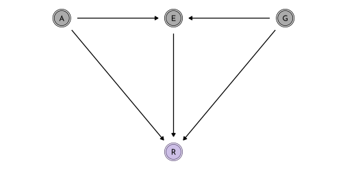
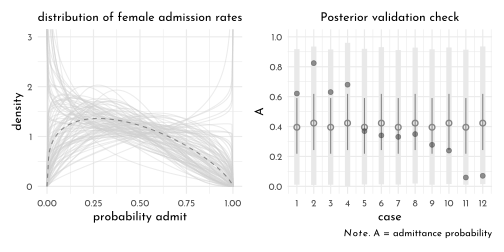

13 Rethinking: Chapter 12
Monsters and Mixtures
by Richard McElreath, building on the Summaries by Solomon Kurz.
13.1 Over-Dispersed Counts
Continuous mixture models to cope with unmeasured sources of variation for count data.
13.1.1 Beta-Binomial
This is a mixture of binomial distributions which estimates the distribution of success (beta-distribution; instead of a single probability).
The beta distribution has two parameters (\(\bar{p}\), or \(\mu\) the average probability and \(\theta\), or \(\kappa\) the shape). It is often alternatively defined in terms of \(\alpha\) and \(\beta\) (eg. in R):
\[ Beta(y | \alpha, \beta) = \frac{y^{\alpha - 1} (1 - y)^{\beta - 1}}{B(\alpha, \beta)} \]
were \(B()\) is the Beta function that computes the normalization.
The connection to \(\bar{p}\)/\(\mu\) and \(\theta\)/\(\kappa\) arises from:
\[ \mu = \frac{\alpha}{\alpha + \beta} \]
and
\[ \kappa = \alpha + \beta \]
With these parameters, the standard deviation of the beta distribution is
\[ \sigma = \sqrt{\mu(1 - \mu) / (\kappa + 1)} \]
library(rethinking)
draw_beta <- function(theta = 2, prob = .5){
ggplot() +
stat_function(fun = function(x){dbeta2(x,prob = prob, theta = theta)},
geom = "area", color = clr_current, fill = fll_current()) +
coord_cartesian(xlim = 0:1, ylim = c(0, 2)) +
labs(subtitle = glue("p: {prob}; theta: {theta}"),
y = 'density', x = "probability") +
theme(plot.subtitle = element_text(hjust = .5))
}
draw_beta() +
draw_beta(5) +
draw_beta(.5) +
draw_beta(prob = .25) +
draw_beta(5, .25) +
draw_beta(.5, .25)data(UCBadmit)
data_ucb <- UCBadmit %>%
as_tibble() %>%
mutate(gid = 3L - as.integer(factor(applicant.gender)))
rm(UCBadmit)\[ \begin{array}{rclr} A_{i} & \sim & BetaBinomial(N_{i}, \bar{p}_{i}, \theta) & \textrm{[likelihood]}\\ \textrm{logit}(\bar{p}_{i}) & = & \alpha_{GID[i]} & \textrm{[linear model]}\\ \alpha_{j} & \sim & Normal(0, 1.5) & \textrm{[$\alpha$ prior]}\\ \theta & = & \phi + 2 & \textrm{[$\theta$ prior, forcing $\gt 2$]}\\ \phi & \sim & Exponential(1) & \textrm{[$\phi$ prior]}\\ \end{array} \]
data_ucb_list <- data_ucb %>%
dplyr::select(admit, applications, gid) %>%
as.list()
model_ucb_beta <- ulam(
flist = alist(
admit ~ dbetabinom( applications, p_bar, theta ),
logit(p_bar) <- alpha[gid],
alpha[gid] ~ dnorm( 0, 1.5 ),
transpars> theta <<- phi + 2.0,
phi ~ dexp(1)
),
data = data_ucb_list,
chains = 4,
cores = 4,
log_lik = TRUE
)ucb_posterior_means <- extract.samples(model_ucb_beta) %>%
as.data.frame() %>%
as_tibble() %>%
mutate(alpha.contrast = alpha.1 - alpha.2,
across(c(alpha.1, alpha.2), .fns = logistic,.names = "p_{.col}"))
precis(ucb_posterior_means) %>%
knit_precis(param_name = "column")| column | mean | sd | 5.5% | 94.5% | histogram |
|---|---|---|---|---|---|
| alpha.1 | -0.44 | 0.42 | -1.12 | 0.19 | ▁▁▂▇▇▂▁ |
| alpha.2 | -0.31 | 0.44 | -1.01 | 0.44 | ▁▁▅▇▃▁▁ |
| phi | 1.00 | 0.82 | 0.07 | 2.52 | ▇▅▃▂▁▁▁▁▁▁▁ |
| theta | 3.00 | 0.82 | 2.07 | 4.52 | ▇▅▃▂▁▁▁▁▁▁▁ |
| alpha.contrast | -0.14 | 0.61 | -1.14 | 0.83 | ▁▁▂▅▇▇▂▁▁ |
| p_alpha.1 | 0.40 | 0.10 | 0.25 | 0.55 | ▁▁▂▃▇▇▇▅▃▁▁▁ |
| p_alpha.2 | 0.43 | 0.10 | 0.27 | 0.61 | ▁▁▁▃▅▇▇▇▅▂▁▁▁▁ |
p1 <- ggplot() +
(pmap(
ucb_posterior_means %>%
filter(row_number() < 51) %>%
rename(p = 'p_alpha.2'),
function(p, theta, ...){
stat_function(fun = function(x){dbeta2(x, prob = p,theta = theta)},
color = clr0dd, alpha = .3, n = 301, xlim = 0:1)
}
)) +
stat_function(fun = function(x){
dbeta2(x,
prob = mean(ucb_posterior_means$p_alpha.1),
theta = mean(ucb_posterior_means$theta))
},
color = clr_current,
n = 301, xlim = 0:1,
geom = "line", size = 1) +
coord_cartesian(ylim = c(0, 3)) +
labs(x = "pobability admit", y = 'density',
subtitle = "distribution of female admission rates")ucb_grid <- distinct(data_ucb, applications, gid, dept)
ucb_mod_val <- link(model_ucb_beta) %>%
as_tibble() %>%
summarise(across(everything(),
.fns = function(x){quantile(x, probs = c(.055, .5, .945))})) %>%
mutate(percentile = c("lower_89", "median", "upper_89")) %>%
pivot_longer(-percentile, names_to = "rowid") %>%
pivot_wider(names_from = percentile) %>%
bind_cols(ucb_grid, . ) %>%
mutate(rn = row_number())
ucb_posterior_predictions <- sim(model_ucb_beta,
data = ucb_grid) %>%
as.matrix() %>%
t() %>%
as_tibble() %>%
bind_cols(ucb_grid, .) %>%
pivot_longer(-c(dept, gid, applications), values_to = "admit") %>%
dplyr::select(-name) %>%
group_by(dept, gid, applications) %>%
summarise(p = quantile(admit/applications, probs = c(.055, .25, .5, .75, .955)),
median = median(admit),
mean = mean(admit/applications),
breaks = c("ll", "l", "m", "h", "hh")) %>%
ungroup() %>%
pivot_wider(names_from = breaks, values_from = p) %>%
mutate(type = "post. pred.",
x = 2 * (as.integer(as.factor(dept)) - 1) + gid)
p2 <- data_ucb %>%
group_by(dept, gid) %>%
summarise(mean_data = mean(admit/applications),
type = "data") %>%
mutate(x = 2 * (as.integer(dept) - 1) + gid) %>%
ggplot(aes(x = x, y = mean_data)) +
geom_segment(data = ucb_posterior_predictions,
aes(xend = x, y = ll, yend = hh),
size = 3, color = clr_alpha(clr0dd, .2)) +
geom_segment(data = ucb_mod_val,
aes(x = rn, xend = rn,
y = lower_89, yend = upper_89),
color = clr_current) +
geom_point(data = ucb_posterior_predictions,
aes(y = mean, shape = factor(gid)),
color = clr_current,
fill = clr_lighten(clr_current),
size = 1.8) +
geom_point(aes(shape = factor(gid)),
color = clr0dd, fill = clr0, size = 1.8) +
scale_shape_manual(values = c(`2` = 21, `1` = 19),
guide = "none") +
scale_x_continuous(breaks = 1:12)+
labs(x = "case", y = "admission rate",
subtitle = "posterior validation check") +
lims(y = c(0,1)) +
theme(panel.background = element_rect(color = clr0,
fill = "transparent"),
panel.grid.major.x = element_blank())
p1 + p2
13.1.2 Negative-Binomial or gamma-Poisson
This equivalent to the beta-binomial, but for Poisson processes.
The gamma-Poisson distribution has two parameters which are recruited from:
- shape(\(\alpha\))
- scale (\(\theta\))
- rate (\(\beta\))
- mean (\(\mu\))
There are several equivalent ways to define the gamma distribution itself.
\[ Gamma(y | \alpha, \beta) = \frac{\beta^{\alpha} y^{\alpha - 1} e^{-\beta y}}{\Gamma (\alpha)} \]
where \(\Gamma\) is the Gamma function.
The rate and shape are simply reciprocals (\(\phi = 1 / \beta\)):
\[ Gamma(y | \alpha, \phi) = \frac{y^{\alpha - 1} e^{-y/\phi}}{\phi^{\alpha} \Gamma (\alpha)} \]
It can also be defined in terms of \(\mu\)
\[ Gamma(y | \mu, \alpha ) = \frac{\left(\frac{\alpha}{\mu}\right)^{\alpha}}{\Gamma(\alpha)} y ^{\alpha - 1} exp(- \frac{\alpha y}{y}) \]
Based on the gamma distribution, the gamma-Poisson (aka. negative binomial) can be expressed as
\[ y_{i} \sim Gamma-Poisson(\mu, \alpha) \]
where \(\mu\) is the mean or rate, taking the place of \(\lambda\) from the Poisson distribution. In the rethinking book, this is noted as:
\[ y_{i} \sim Gamma-Poisson(\lambda_{i}, \phi) \]
Note, that \(\phi\) controls the variance and must thus be positive - it controls how closely the distribution matches a pure Poisson process. The variance of the gamma-Poisson is \(\lambda + \lambda ^ 2 / \phi\))
data(Kline)
data_kline <- Kline %>%
as_tibble() %>%
mutate(pop_log_std = standardize(log(population)),
contact_idx = 3L - as.integer(factor(contact)))
rm(Kline)data_kline_list <- data_kline %>%
dplyr::select(total_tools,
population,
contact_idx) %>%
as.list()
model_ocean_sci_gamma <- ulam(
flist = alist(
total_tools ~ dgampois( lambda, phi ),
lambda <- exp(alpha[contact_idx]) * population^beta[contact_idx] / gamma,
alpha[contact_idx] ~ dnorm(1, 1),
beta[contact_idx] ~ dexp(1),
gamma ~ dexp(1),
phi ~ dexp(1)
),
data = data_kline_list,
chains = 4,
cores = 4,
log_lik = TRUE
)plot_ocean <- function(model, title){
ocean_k_values_sc <- PSIS(model,
pointwise = TRUE) %>%
bind_cols(data_kline, .)
n <- 101
ocean_grid_sc <- crossing(population = seq(0, 3e5, length.out = n),
contact_idx = 1:2)
ocean_posterior_predictions_sc <- link(model,
data = ocean_grid_sc) %>%
as.matrix() %>%
t() %>%
as_tibble() %>%
bind_cols(ocean_grid_sc, .) %>%
pivot_longer(-c(population, contact_idx), values_to = "total_tools") %>%
dplyr::select(-name) %>%
group_by(population, contact_idx) %>%
summarise(p = list(quantile(total_tools, probs = c(.055, .25, .5, .75, .955))),
breaks = list(c("ll", "l", "m", "h", "hh"))) %>%
ungroup() %>%
unnest(c(p, breaks)) %>%
pivot_wider(names_from = breaks, values_from = p)
ocean_posterior_predictions_sc %>%
ggplot(aes(x = population, y = total_tools)) +
geom_smooth(aes(ymin = ll, y = m, ymax = hh,
group = factor(contact_idx),
color = factor(contact_idx),
fill = after_scale(clr_alpha(color))),
stat = "identity", size = .3) +
geom_point(data = ocean_k_values_sc,
aes(color = factor(contact_idx),
fill = after_scale(clr_alpha(color)),
size = k),
shape = 21) +
scale_color_manual(values = c(`1` = clr_current, `2` = clr0dd), guide = "none") +
scale_size_continuous(guide = "none") +
scale_x_continuous(breaks = 1e5 * (0:3), labels = scales::comma) +
coord_cartesian(ylim = c(0, 80),
x = c(-1e3, 3e5),
expand = 1) +
labs(subtitle = title) +
theme(plot.subtitle = element_text(hjust = .5))
}
chapter11_models <- read_rds("envs/chapter11_models.rds")
plot_ocean(chapter11_models$model_ocean_scientific,
title = "the scientific model") +
plot_ocean(model_ocean_sci_gamma,
title = "the scientific gamma-poisson model")
13.1.3 Over-dispersion, Entropy and Information Criteria
Generally it’s not advised to apply WAIC or PSIS to over-dispersed models (beta-Binomial and gamma-Poisson), ‘’unless you are very sure of what you are doing’’. That is because in these model types can not easily be dis-aggregated row-wise without changing causal assumptions.
13.2 Zero-Inflated Outcomes
Whenever there are different causes for the same observation, then a mixture model may be useful.
This is used e.g. when several ways can prevent a count from happening (we count zero scrub jays in the forest either because there are none or because we scared them all away before starting the count.)
13.2.1 Zero-Inflated Poisson
Revisiting the monastery example - this time there are also drinking days, which prevent monks from producing new manuscripts.
library(ggraph)
library(tidygraph)
rstat_nodes <- data.frame(name = c("A", "B", "C", "D", "E"))
rstat_edges <- data.frame(from = c(1, 1, 2, 3, 3),
to = c(2, 3, 4, 4, 5))
flow_grph <- tbl_graph(nodes = rstat_nodes, edges = rstat_edges) %E>%
mutate(label = c("p", "1 - p", "", "" ,"")) %N>%
mutate(label = c("", "Drink", "Work", "observe\ny = 0" ,"observe\ny > 0"),
x_offset = c(0, -.13, .13, 0, 0),
show_point = row_number() < 4) %N>%
create_layout(layout = tibble( x = c(.5, 0, 1, 0, 1),
y = c(1, .5, .5, 0, 0)))
edge_labels <- ggraph::get_edges(format = "long")(flow_grph) %>%
mutate(node_start = c("from", "to")[1 + (node == from)]) %>%
dplyr::select(edge.id, node_start, x, y, label) %>%
filter(label != "") %>%
mutate(order = c(1,2, 4,3)) %>%
arrange(order)
p1 <- flow_grph %>%
ggraph() +
geom_edge_link(end_cap = ggraph::rectangle(1, .15, "npc"),
arrow = arrow(type = "closed", length = unit(4, "pt")),
color = clr0dd) +
geom_node_point(aes(filter = show_point),
size = 10, shape = 21, color = clr0dd, fill = clr0) +
geom_node_text(aes(x = x + x_offset, label = label),
family = fnt_sel) +
geomtextpath::geom_textpath(data = edge_labels,
aes(x = x, y = y, label = label,
group = edge.id),
text_only = TRUE,
vjust = 1.8,
family = fnt_sel) +
coord_fixed(ratio = .6, ylim = c(-.2, 1.1))The likelihood of observing zero manuscripts is:
\[ \begin{array}{rcl} Pr(0 | p, \lambda) & = & Pr(\textrm{drink} | p) + Pr(\textrm{work} | p) \times Pr(0 | \lambda) \\ & = & p + (1 - p)~\textrm{exp}(-\lambda) \end{array} \]
and the likelihood for non-zero values is:
\[ Pr(y | y > 0, p, \lambda) = Pr(\textrm{drink} | p)(0) + Pr(\textrm{work}|p) Pr(y | \lambda) = (1 - p) \frac{\lambda^{y}\textrm{exp}(-\lambda)}{y} \]
We are defining those distributions as \(ZIPoisson\) (zero-inflated Poisson, with the parameters \(p\) probability of 0, and \(\lambda\) the mean of the Poisson) to use in the model:
\[ \begin{array}{rclr} y_{i} & \sim & ZIPoisson(p_{i}, \lambda_{i}) & \textrm{[likelihood]}\\ \textrm{logit}(p_{i}) & = & \alpha_{p} + \beta_{p} x_{i} & \textrm{[linear model #1 ]}\\ \textrm{log}(\lambda_{i}) & = & \alpha_{\lambda} + \beta_{\lambda} x_{i} & \textrm{[linear model #2 ]}\\ \end{array} \]
\(\rightarrow\) we need two linear models and two link functions for the two processes within the ZIPoisson.
p_drink <- .2 # 20% of days
rate_work <- 1 # ~ 1 ms / day
n <- 365
set.seed(42)
data_books <- tibble(drink = rbinom(n , 1, p_drink),
books = as.integer((1 - drink) * rpois(n , rate_work)))
p2 <- data_books %>%
group_by(drink, books) %>%
count() %>%
ggplot(aes(x = books, y = n)) +
geom_bar(stat = "identity", width = .66,
aes(color = factor(drink, levels = 1:0),
fill = after_scale(clr_alpha(color, .7)))) +
scale_color_manual("drunk?", values = c(`1` = clr_current, `0` = clr0dd)) +
theme(panel.grid.major.x = element_blank(),
panel.grid.minor.x = element_blank(),
panel.grid.minor.y = element_blank())p1 + p2
model_books_drunk <- ulam(
flist = alist(
books ~ dzipois(p, lambda),
logit(p) <- alpha_p,
log(lambda) <- alpha_l,
alpha_p ~ dnorm(-1.5, 1),
alpha_l ~ dnorm(1, .5)
),
data = data_books,
chains = 4,
cores = 4
)precis(model_books_drunk) %>%
knit_precis()| param | mean | sd | 5.5% | 94.5% | n_eff | Rhat4 |
|---|---|---|---|---|---|---|
| alpha_p | -1.37 | 0.41 | -2.05 | -0.84 | 458.49 | 1.01 |
| alpha_l | -0.06 | 0.09 | -0.21 | 0.08 | 470.42 | 1.01 |
books_posterior <- extract.samples(model_books_drunk) %>%
as_tibble()
books_posterior %>%
summarise(alpha_p = mean(inv_logit(alpha_p)),
alpha_l = mean(exp(alpha_l)))#> # A tibble: 1 × 2
#> alpha_p alpha_l
#> <dbl> <dbl>
#> 1 0.209 0.946\(\rightarrow\) we can get an accurate estimate of share of days when the monks are drunk, but we don’t know which exact days those are.
13.2.2 Zero-Inflated Model in Stan
Here is how to translate the rethinking::dzipois() function into stan:
model_books_drunk_alt <- ulam(
flist = alist(
books | books > 0 ~ custom( log1m(p) + poisson_lpmf(books | lambda) ),
books | books == 0 ~ custom( log_mix( p, 0, poisson_lpmf(0 | lambda) ) ),
logit(p) <- alpha_p,
log(lambda) <- alpha_l,
alpha_p ~ dnorm(-1.5, 1),
alpha_l ~ dnorm(1, .5)
),
data = data_books,
chains = 4,
cores = 4
)precis(model_books_drunk_alt) %>%
knit_precis()| param | mean | sd | 5.5% | 94.5% | n_eff | Rhat4 |
|---|---|---|---|---|---|---|
| alpha_p | -1.39 | 0.40 | -2.09 | -0.86 | 519.90 | 1.01 |
| alpha_l | -0.06 | 0.09 | -0.21 | 0.08 | 616.36 | 1.00 |
stancode(model_books_drunk_alt)#> data{
#> int drink[365];
#> int books[365];
#> }
#> parameters{
#> real alpha_p;
#> real alpha_l;
#> }
#> model{
#> real p;
#> real lambda;
#> alpha_l ~ normal( 1 , 0.5 );
#> alpha_p ~ normal( -1.5 , 1 );
#> lambda = alpha_l;
#> lambda = exp(lambda);
#> p = alpha_p;
#> p = inv_logit(p);
#> for ( i in 1:365 )
#> if ( books[i] == 0 ) target += log_mix(p, 0, poisson_lpmf(0 | lambda));
#> for ( i in 1:365 )
#> if ( books[i] > 0 ) target += log1m(p) + poisson_lpmf(books[i] | lambda);
#> }13.3 Ordered Categorical Outcomes
[For ordered categories, unlike counts], the differences in value are not necessarily equal. […] Just treating ordered categories as continuous measures is not a good idea.
The general approach is a multinomial prediction problem. But, we are using a cumulative link function to move predictions progressively through the categories in sequence.
13.3.1 Moral Intuition
The example works on data for the trolley problem.
data(Trolley)
data_trolley <- Trolley %>%
as_tibble() %>%
mutate(education = factor(as.character(edu),
levels = levels(edu)[c(2, 6, 8, 4,
7, 1, 5, 3)]),
education_idx = as.integer(education),
education_norm = normalize(education_idx),
sex = 1L + male,
age_scl = age / max(age))
rm(Trolley)p1 <- data_trolley %>%
ggplot(aes(x = response)) +
geom_bar(width = .6,
color = clr0dd,
fill = clr_alpha(clr0dd,.7)) +
theme(panel.grid.major.x = element_blank(),
panel.grid.minor.x = element_blank(),
panel.grid.minor.y = element_blank())table(data_trolley$response) / nrow(data_trolley)#>
#> 1 2 3 4 5 6 7
#> 0.12829809 0.09154079 0.10785498 0.23393756 0.14723061 0.14551863 0.14561934logit <- function(x){ log(x / (1 - x)) }
data_trolley_cumulative <- data_trolley %>%
group_by(response) %>%
count() %>%
ungroup() %>%
mutate(pr_k = n / sum(n),
cum_pr_k = cumsum(pr_k),
log_cumulative_odds = logit(cum_pr_k),
cum_pr_k_m1 = lag(cum_pr_k, default = 0))
p2 <- data_trolley_cumulative %>%
ggplot(aes(x = response, y = cum_pr_k)) +
# as_reference(geom_point(size = 5), id = "pnts") +
# with_blend(
geom_line(color = clr0dd) +
# ,bg_layer = "pnts", blend_type = "out") +
geom_point(color = clr0dd, fill = clr0, shape = 21, size = 2) +
lims(y = c(0, 1))The log-cumulative-odds, that a response value \(y_{i}\) is \(\geqslant\) some possible outcome:
\[ \textrm{log} \frac{Pr(y_{i} \leqslant k)}{1 - Pr(y_{i} \leqslant k)} = \alpha_{k} \]
with an unique intercept \(\alpha_{k}\) for each possible outcome value \(k\).
p3 <- data_trolley_cumulative %>%
filter(log_cumulative_odds != Inf) %>%
ggplot(aes(x = response, y = log_cumulative_odds)) +
# as_reference(geom_point(size = 5), id = "pnts") +
# with_blend(
geom_line(color = clr0dd) +
#,bg_layer = "pnts", blend_type = "out") +
geom_point(color = clr0dd, fill = clr0, shape = 21, size = 2) p1 + p2 + p3 &
scale_x_discrete(limits = factor(1:7))After observing \(k\), we can get its likelihood by subtraction:
\[ p_{k} = Pr(y_{i} = k) = Pr(y_{i} \leqslant k) - Pr(y_{i} \leqslant k - 1) \]
data_trolley_cumulative %>%
ggplot(aes(x = response, y = cum_pr_k)) +
geom_linerange(aes(ymin = 0, ymax = cum_pr_k),
color = clr_dark, linetype = 3) +
geom_linerange(aes(ymin = cum_pr_k_m1, ymax = cum_pr_k),
color = clr_current, size = 2, alpha = .5) +
geom_text(aes(y = .5 * (cum_pr_k_m1 + cum_pr_k),
label = response, x = response + .2),
color = clr_current, family = fnt_sel) +
geom_line(color = clr0dd) +
geom_point(color = clr0dd, fill = clr0, shape = 21, size = 1.5) +
lims(y = c(0, 1))
From the 2019 Lecture, at 25:32: And I know at this point you are saying: ‘But I already had that when I started.’ Yes, but you would not be able to model the whole thing with a linear model. The whole reason that this literature uses the cumulative link is because it manages the fact that they are all bound together in an ordered way. You establish the order by using a cumulative link.
So here is the mathematical notation of the ordered logit:
\[ \begin{array}{rclr} R_{i} & \sim & Ordered-logit(\phi_{i}, \kappa) & \textrm{[probability of the data]}\\ \phi_{i} & = & 0 & \textrm{[linear model]}\\ \kappa_{k} & \sim & Normal(0, 1.5) & \textrm{[common prior for each intercept]}\\ \end{array} \]
But the model can also be expressed more literally:
\[ \begin{array}{rclcr} R_{i} & \sim & Categorical(p) & &\textrm{[probability of the data]}\\ p_{1} & = & q_{1} & &\textrm{[probabilities of each value $k$]}\\ p_{k} & = & q_{k} - q_{k-1} & \textrm{for}~K \gt k \gt 1 &\\ p_{K} & = & 1 - q_{k-1} & &\\ \textrm{logit}(q_{k}) & = & \kappa_{k} - \phi_{i}& &\textrm{[cumulative logit link]}\\ \phi_{i} & = & \textrm{trems of linear model} & &\textrm{[linear model]}\\ \kappa_{k} & \sim & Normal(0, 1.5) & &\textrm{[common prior for each intercept]}\\ \end{array} \]
model_trolley <- ulam(
flist = alist(
response ~ dordlogit( 0, cutpoints ),
cutpoints ~ dnorm( 0, 1.5 )
),
data = list(response = data_trolley$response),
cores = 4,
chains = 4
)
model_trolley_quap <- quap(
flist = alist(
response ~ dordlogit( 0, c(alpha_1, alpha_2, alpha_3, alpha_4, alpha_5, alpha_6) ),
c(alpha_1, alpha_2, alpha_3, alpha_4, alpha_5, alpha_6) ~ dnorm( 0, 1.5 )
),
data = data_trolley_cumulative,
start = list(alpha_1 = -2,
alpha_2 = -1,
alpha_3 = 0,
alpha_4 = 1,
alpha_5 = 2,
alpha_6 = 2.5)
)precis(model_trolley, depth = 2) %>%
knit_precis()| param | mean | sd | 5.5% | 94.5% | n_eff | Rhat4 |
|---|---|---|---|---|---|---|
| cutpoints[1] | -1.92 | 0.03 | -1.97 | -1.86 | 1691.39 | 1 |
| cutpoints[2] | -1.27 | 0.02 | -1.31 | -1.23 | 2039.57 | 1 |
| cutpoints[3] | -0.72 | 0.02 | -0.75 | -0.68 | 2617.99 | 1 |
| cutpoints[4] | 0.25 | 0.02 | 0.22 | 0.28 | 2675.98 | 1 |
| cutpoints[5] | 0.89 | 0.02 | 0.86 | 0.93 | 2608.58 | 1 |
| cutpoints[6] | 1.77 | 0.03 | 1.73 | 1.82 | 2424.11 | 1 |
To get the cumulative probabilities back
round(inv_logit(coef(model_trolley)), 3) %>% as.matrix() %>%
as.data.frame() %>%
knitr::kable()| V1 | |
|---|---|
| cutpoints[1] | 0.128 |
| cutpoints[2] | 0.220 |
| cutpoints[3] | 0.328 |
| cutpoints[4] | 0.562 |
| cutpoints[5] | 0.709 |
| cutpoints[6] | 0.855 |
compare to data_trolley_cumulative$cum_pr_k:
data_trolley_cumulative#> # A tibble: 7 × 6
#> response n pr_k cum_pr_k log_cumulative_odds cum_pr_k_m1
#> <int> <int> <dbl> <dbl> <dbl> <dbl>
#> 1 1 1274 0.128 0.128 -1.92 0
#> 2 2 909 0.0915 0.220 -1.27 0.128
#> 3 3 1071 0.108 0.328 -0.719 0.220
#> 4 4 2323 0.234 0.562 0.248 0.328
#> 5 5 1462 0.147 0.709 0.890 0.562
#> 6 6 1445 0.146 0.854 1.77 0.709
#> 7 7 1446 0.146 1 Inf 0.854But now, we also have a posterior distribution around these values, which provides a measure of uncertainty.
extract.samples(model_trolley) %>%
as.data.frame() %>%
as_tibble() %>%
mutate(across(everything(), inv_logit),
cutpoints.7 = 1,
.draw = row_number()) %>%
pivot_longer(-.draw, values_to = "p_cum") %>%
group_by(.draw) %>%
arrange(.draw, name) %>%
mutate(p = p_cum - lag(p_cum, default = 0),
name = str_sub(name,-1, -1) %>% as.integer()) %>%
group_by(name) %>%
summarise(quantiles = list(tibble(p = c(quantile(p,
probs = c(.055, .25, .5, .75, .955)),
mean(p)),
quantile = c("ll","l","m","h","hh", "mean")))) %>%
unnest(quantiles) %>%
pivot_wider(names_from = "quantile", values_from = "p") %>%
ggplot(aes(y = factor(name))) +
geom_linerange(aes(xmin = l, xmax = h),
size = 1, color = clr0dd) +
geom_linerange(aes(xmin = ll, xmax = hh),
size = .2, color = clr0dd) +
geom_point(aes(x = m), shape = 21,
color = clr0dd, fill = clr0) +
geom_point(data = data_trolley_cumulative,
aes(y = response, x = pr_k),
color = clr_current, shape = 1, size = 3.5) +
labs(y = "response", x = "p", subtitle = "posterior distribution for pr_k")
Adding predictor variables
We define a linear model \(\phi_{i} = \beta x_{i}\) to express the cumulative logit as:
\[ \begin{array}{rcl} \textrm{log}\frac{Pr(y_{i} -\leqslant k)}{1 - Pr(y_{i} \leqslant k)} & = &\alpha_k - \phi_i\\ \phi_{i} & = & \beta x_{i} \end{array} \]
We need to subtract \(\phi\) from \(\alpha\), since the log-cumulative odds will shift the sign:
(pk <- dordlogit( 1:7, 0, coef(model_trolley))) %>% round(digits = 2)#> [1] 0.13 0.09 0.11 0.23 0.15 0.15 0.15sum(pk * 1:7)#> [1] 4.198875(pk <- dordlogit( 1:7, 0, coef(model_trolley) - .5)) %>% round(digits = 2)#> [1] 0.08 0.06 0.08 0.21 0.16 0.18 0.22sum(pk * 1:7)#> [1] 4.729279Now, to specify the predictors (action, intention, contact) within the model (including an interaction between intention and the other two), we write:
\[ \begin{array}{rcl} \textrm{log}\frac{Pr(y_{i} -\leqslant k)}{1 - Pr(y_{i} \leqslant k)} & = &\alpha_k - \phi_i\\ \phi_{i} & = & \beta_{A} A_{i} + \beta_{C} C_{i} + B_{I,i} I_{i}\\ B_{I,i} & = & \beta_{I} + \beta_{IA} A_{i} + \beta_{IC} C_{i} \end{array} \]
data_trolley_list <- data_trolley %>%
dplyr::select(response, action,
intention, contact) %>%
as.list()
model_trolley_predict <- ulam(
flist = alist(
response ~ dordlogit( phi, cutpoints),
phi <- beta_a * action + beta_c * contact + B_i * intention,
B_i <- beta_i + beta_ia * action + beta_ic * contact,
c(beta_a, beta_c, beta_i, beta_ia, beta_ic) ~ dnorm(0, .5),
cutpoints ~ dnorm(0, 1.5)
),
data = data_trolley_list,
chains = 4,
cores = 4
)library(tidybayes)
trolley_posterior <- extract.samples(model_trolley_predict) %>%
as.data.frame() %>%
as_tibble()
trolley_posterior %>%
dplyr::select(starts_with("beta")) %>%
pivot_longer(everything()) %>%
mutate(name = factor(name, levels = c("beta_a", "beta_i", "beta_c",
"beta_ia", "beta_ic"))) %>%
ggplot(aes(x = value, y = name)) +
geom_vline(xintercept = 0, linetype = 3, color = clr_dark) +
stat_gradientinterval(.width = c(.5, .89), size = 1,
point_size = 1.5, shape = 21,
point_fill = clr_lighten(clr_current),
fill = clr_lighten(clr_current),
color = clr_dark) +
scale_x_continuous("marginal posterior", breaks = -5:0 / 4) +
scale_y_discrete(NULL) +
coord_cartesian(xlim = c(-1.4, 0))
new_trolley <- data_trolley %>%
distinct(action, contact, intention) %>%
mutate(combination = str_c(action, contact, intention, sep = "_"),
data_config = row_number())
label_levels <- map2_chr(c(0,1,0),
c(0, 0, 1),
function(action, contact){
glue("action: {action}; contact: {contact}")
})
trolley_posterior_prediction <- link(model_trolley_predict, data = new_trolley) %>%
as.data.frame() %>%
as_tibble() %>%
mutate(.iter = row_number()) %>%
bind_cols(trolley_posterior) %>%
pivot_longer(-c(.iter, starts_with("beta"), starts_with("cutpoints"))) %>%
separate(name, into = c("param", "data_config"), sep = "\\.") %>%
mutate(data_config = as.integer(data_config)) %>%
pivot_wider(names_from = param, values_from = value) %>%
filter(.iter < 51) %>%
left_join(new_trolley) %>%
mutate(p_k = pmap(cur_data(),
.f = function(phi,
cutpoints.1, cutpoints.2, cutpoints.3,
cutpoints.4, cutpoints.5, cutpoints.6,
...){
ct <- c(cutpoints.1, cutpoints.2, cutpoints.3,
cutpoints.4, cutpoints.5, cutpoints.6)
tibble(pk = pordlogit(1:6, phi, ct),
idx = 1:6)}
)) %>%
unnest(p_k) %>%
mutate(label = factor(glue("action: {action}; contact: {contact}"),
levels = label_levels))
p1 <- trolley_posterior_prediction %>%
ggplot(aes(x = intention, y = pk)) +
geom_line(aes(group = str_c(.iter,"_", idx)),
color = clr_alpha(clr0d, .25)) +
facet_wrap(label ~ .)p2 <- sim(model_trolley_predict, data = new_trolley) %>%
as.data.frame() %>%
as_tibble() %>%
set_names(nm = new_trolley$combination) %>%
pivot_longer(everything(),
names_to = "combination") %>%
group_by(combination, value) %>%
count() %>%
ungroup() %>%
separate(combination,
into = c("action", "contact", "intention"),
sep = "_") %>%
mutate(label = factor(glue("action: {action}; contact: {contact}"),
levels = label_levels)) %>%
ggplot(aes(x = value, y = n)) +
geom_bar(aes(fill = after_scale(clr_alpha(color)),
color = intention),
position = position_dodge2(padding = .3) ,
width = .8, stat = "identity") +
facet_wrap(label ~ .) +
scale_color_manual(values = c(`0` = clr0d, `1` = clr_current)) +
theme(legend.position = "bottom")p1 / p213.4 Ordered Categorical Predictors
Adding education as ordered categorical predictor for the trolley model:
levels(data_trolley$education)#> [1] "Elementary School" "Middle School" "Some High School"
#> [4] "High School Graduate" "Some College" "Bachelor's Degree"
#> [7] "Master's Degree" "Graduate Degree"We will include the new predictors within the model as series of \(\delta\) parameters (excluding the first level, which will be present the intercept):
\[ \begin{array}{rclr} \phi_{i} & = & \delta_{1} + \textrm{other stuff} & \textrm{[effect of `Middle School`]}\\ \phi_{i} & = & \delta_{1} + \delta_{2} + \textrm{other stuff} & \textrm{[effect of `some High School`]}\\ \phi_{i} & = & \sum_{j=1}^{7} \delta_{j} + \textrm{other stuff} & \textrm{[effect of highest education]}\\ \phi_{i} & = & \beta_{e} \sum_{j=0}^{E_{i}-1} \delta_{j} + \textrm{other stuff} & \textrm{[using $\beta = 1$ for max education effect ]} \end{array} \]
Where \(E_{i}\) is the completed education of individual \(i\). For individuals with \(E_{i} = 1\), \(\beta_{E}\) (the education effect) is ignored, since \(\beta_{E}~\delta_{0} = 0\).
Now, we can include the new predictor term in the model:
\[ \begin{array}{rclr} R_{i} & \sim & Ordered-logit( \phi_{i}, \kappa) & \textrm{[likelihood]}\\ \phi_{i} & = & \beta_{E} \sum_{j=0}^{E_{i}-1} \delta_{j} + \beta_{A} A_{i} + \beta_{I} I_{i} + \beta_{C} C_{i} & \textrm{[model]}\\ \beta_{A},\beta_{I},\beta_{C},\beta_{E} & \sim & Normal(0,1) & \textrm{[$\beta$ priors]}\\ \delta & \sim & Dirichlet(\alpha) & \textrm{[$\delta$ prior]} \end{array} \]
Introducing the Dirichlet distribution
The Dirichlet distribution is a multivariate extension of the beta distribution (it produces probabilities for multiple event with multiple different outcomes that together sum up to one).
library(gtools)
set.seed(42)
delta <- rdirichlet( 10, alpha = rep(2, 7)) %>%
as_tibble() %>%
mutate(rn = row_number()) %>%
pivot_longer(-rn) %>%
mutate(x = str_sub(name, -1, -1) %>% as.integer())
p1 <- delta %>%
ggplot(aes(x = x, y = value, group = rn)) +
geom_line(data = . %>% filter(rn < 10), color = clr0d) +
geom_line(data = . %>% filter(rn == 10), color = clr_current) +
geom_point(data = . %>% filter(rn < 10),
color = clr0d, fill = clr0,
size = 2, shape = 21) +
geom_point(data = . %>% filter(rn == 10),
color = clr_current, fill = clr_lighten(clr_current),
size = 2, shape = 21) +
labs(subtitle = "10 draws from a 7 class dirichlet distribution",
x = "outcome", y = "probability")
delta3 <- rdirichlet( 500, alpha = c(3, 4, 6)) %>%
as_tibble() %>%
mutate(rn = row_number())
library(ggtern)
source("bayesian_settings.R")
clr_current <- clr1
p2 <- delta3 %>%
ggtern(mapping = aes(x = V1, y = V2, z = V3)) +
stat_density_tern(aes(color = ..level..,
fill = after_scale(clr_alpha(color))),
geom = 'polygon') +
scale_color_gradientn(colours = c(clr0, clr_current), guide = "none") +
scale_T_continuous(breaks = c(.25, .5 ,.75, 1),
minor_breaks = c(.125, .375, .625, .875),
label = c(0.25, 0.5, .75, 1) %>% sprintf("%.2f",.)) +
scale_L_continuous(breaks = c(.25, .5 ,.75, 1),
minor_breaks = c(.125, .375, .625, .875),
label = c(0.25, 0.5, .75, 1) %>% sprintf("%.2f",.)) +
scale_R_continuous(breaks = c(.25, .5 ,.75, 1),
minor_breaks = c(.125, .375, .625, .875),
label = c(0.25, 0.5, .75, 1) %>% sprintf("%.2f",.)) +
labs(subtitle = "density for a 3 class dirichlet distribution") +
theme_minimal(base_family = fnt_sel) +
theme(panel.border = element_rect(size = .5, color = clr0d))
list(ggplotGrob(p1), ggplotGrob(p2)) %>% wrap_plots()data_trolley_list2 <- data_trolley %>%
dplyr::select(response, action, intention, contact, education_idx) %>%
as.list() %>%
c(., list(alpha = rep(2, 7)))model_trolley_education <- ulam(
flist = alist(
response ~ ordered_logistic( phi, kappa ),
phi <- beta_e * sum(delta_j[1:education_idx]) +
beta_a * action + beta_i * intention + beta_c * contact,
kappa ~ normal( 0, 1.5 ),
c( beta_a, beta_i, beta_c, beta_e ) ~ normal( 0, 1 ),
vector[8]: delta_j <<- append_row( 0, delta ),
simplex[7]: delta ~ dirichlet( alpha )
),
data = data_trolley_list2,
chains = 4,
cores = 4
)
write_rds(model_trolley_education, file = "brms/ulam_c12_model_trolley_education.rds")model_trolley_education <- read_rds("brms/ulam_c12_model_trolley_education.rds")precis(model_trolley_education, depth = 2, omit = "kappa") %>%
knit_precis()| param | mean | sd | 5.5% | 94.5% | n_eff | Rhat4 |
|---|---|---|---|---|---|---|
| beta_e | -0.32 | 0.17 | -0.59 | -0.07 | 955.42 | 1 |
| beta_c | -0.96 | 0.05 | -1.03 | -0.88 | 2336.49 | 1 |
| beta_i | -0.72 | 0.04 | -0.78 | -0.66 | 2848.95 | 1 |
| beta_a | -0.70 | 0.04 | -0.77 | -0.64 | 2281.89 | 1 |
| delta[1] | 0.23 | 0.14 | 0.05 | 0.48 | 1478.39 | 1 |
| delta[2] | 0.14 | 0.08 | 0.03 | 0.30 | 2423.27 | 1 |
| delta[3] | 0.20 | 0.11 | 0.05 | 0.38 | 2112.40 | 1 |
| delta[4] | 0.17 | 0.10 | 0.04 | 0.34 | 2282.96 | 1 |
| delta[5] | 0.04 | 0.05 | 0.01 | 0.11 | 945.10 | 1 |
| delta[6] | 0.10 | 0.06 | 0.02 | 0.21 | 2489.65 | 1 |
| delta[7] | 0.13 | 0.08 | 0.03 | 0.27 | 2097.86 | 1 |
extract.samples(model_trolley_education) %>%
as.data.frame() %>%
as_tibble() %>%
dplyr::select(starts_with("delta")) %>%
set_names(nm = levels(data_trolley$education)[2:8]) %>%
ggpairs(
lower = list(continuous = wrap(my_lower, col = clr_current)),
diag = list(continuous = wrap("densityDiag", fill = fll0,
color = clr_current,
fill = clr_alpha(clr_current),
adjust = .7)),
upper = list(continuous = wrap(my_upper , size = 4,
color = "black", family = fnt_sel)) ) +
theme(panel.border = element_rect(color = clr_dark,
fill = "transparent"))Comparing how simply throwing the ordered categorical predictor into a linear model underestimates the education effect:
data_trolley_list3 <- data_trolley %>%
dplyr::select(response, action, intention, contact, education_norm) %>%
as.list()
model_trolley_education_linear <- ulam(
flist = alist(
response ~ ordered_logistic( mu, cutpoints ),
mu <- beta_e * education_norm + beta_a * action +
beta_i * intention + beta_c * contact,
c( beta_a, beta_i, beta_c, beta_e ) ~ normal( 0, 15 ),
cutpoints ~ normal( 0, 1.5 )
),
data = data_trolley_list3,
chains = 4,
cores = 4
)precis(model_trolley_education_linear) %>%
knit_precis()| param | mean | sd | 5.5% | 94.5% | n_eff | Rhat4 |
|---|---|---|---|---|---|---|
| beta_e | -0.10 | 0.09 | -0.25 | 0.04 | 1723.48 | 1 |
| beta_c | -0.96 | 0.05 | -1.04 | -0.88 | 2115.57 | 1 |
| beta_i | -0.72 | 0.04 | -0.78 | -0.66 | 2385.87 | 1 |
| beta_a | -0.71 | 0.04 | -0.77 | -0.64 | 1934.02 | 1 |
library(rlang)
chapter12_models <- env(
data_ucb_list = data_ucb_list,
model_ucb_beta = model_ucb_beta,
data_kline = data_kline,
data_kline_list = data_kline_list,
model_ocean_sci_gamma = model_ocean_sci_gamma,
data_books = data_books,
model_books_drunk = model_books_drunk,
model_books_drunk_alt = model_books_drunk_alt,
data_trolley = data_trolley,
data_trolley_cumulative = data_trolley_cumulative,
model_trolley = model_trolley,
model_trolley_quap = model_trolley_quap,
data_trolley_list = data_trolley_list,
model_trolley_predict = model_trolley_predict,
data_trolley_list2 = data_trolley_list2,
model_trolley_education = model_trolley_education,
data_trolley_list3 = data_trolley_list3,
model_trolley_education_linear = model_trolley_education_linear
)
write_rds(chapter12_models, "envs/chapter12_models.rds")13.5 Homework
E1
In an un-ordered categorical variable the ranking of levels is arbitrary (eg. types of fruit: apple, banana, oranges), while in an ordered categorical variable the order of categories is meaningful but not even across levels (eg. developmental stages in fish: egg, larvae, juvenile, adult).
E2
It uses a cumulative link function to encode the order of levels. Here the probability of witnessing the current event or an event of a lover level is considered.
E3
It will tend to underestimate the rate \(\lambda\) of the modeled Poisson process.
E4
Over-dispersed counts can occur when an event can be the result of two different processes. This could be eg. fruit-fall below trees which could depend on the ripening process as well as on animal intervention.
M1
data_uni <- tibble(
rating = 1:4,
n = c(12L, 36L, 7L, 41L),
pr = n / sum(n),
n_cumulative = cumsum(n),
pr_cumulative = n_cumulative / sum(n),
cumulative_odds = pr_cumulative / (1 - pr_cumulative),
log_cumulative_odds = log(cumulative_odds))M2
data_uni %>%
ggplot(aes(x = rating, y = pr_cumulative)) +
geom_linerange(aes(ymin = 0, ymax = pr_cumulative),
linetype = 3, color = clr_dark) +
geom_linerange(aes(ymin = pr_cumulative - pr,
ymax = pr_cumulative),
size = 2, color = clr_alpha(clr_dark, .4)) +
geom_line(color = clr0dd) +
geom_point(shape = 21, size = 2,
color = clr0dd, fill = clr0) +
coord_cartesian(ylim = 0:1)M3
\[ \begin{array}{rclr} y_{i} & \sim & ZIBinomial(p_{0,i}, n, p_{i}) & \textrm{[likelihood]}\\ \textrm{logit}(p_{0,i}) & = & \alpha_{p_{0}} + \beta_{p_{0}} x_{i} & \textrm{[linear model #1 ]}\\ \textrm{logit}(p_{i}) & = & \alpha_{p} + \beta_{p} x_{i} & \textrm{[linear model #2 ]}\\ \end{array} \]
H1
data(Hurricanes)
data_hurricane <- Hurricanes %>%
as_tibble() %>%
mutate(damage_norm_log = log(damage_norm),
across(c(femininity, damage_norm, damage_norm_log, min_pressure),
.fns = standardize, .names = "{.col}_std"))
rm(Hurricanes)model_hurricane_intercept <- ulam(
flist = alist(
deaths ~ dpois( lambda ),
log(lambda) <- alpha,
alpha ~ dnorm(3, 0.5)
),
data = data_hurricane,
chains = 4,
cores = 4,
log_lik = TRUE
)
model_hurricane_fem <- ulam(
flist = alist(
deaths ~ dpois( lambda ),
log(lambda) <- alpha + beta_f * femininity_std,
alpha ~ dnorm(3, 0.5),
beta_f ~ dnorm(0, 0.2)
),
data = data_hurricane,
chains = 4,
cores = 4,
log_lik = TRUE
)precis(model_hurricane_intercept) %>%
knit_precis()| param | mean | sd | 5.5% | 94.5% | n_eff | Rhat4 |
|---|---|---|---|---|---|---|
| alpha | 3.03 | 0.02 | 2.99 | 3.06 | 687.29 | 1 |
precis(model_hurricane_fem) %>%
knit_precis()| param | mean | sd | 5.5% | 94.5% | n_eff | Rhat4 |
|---|---|---|---|---|---|---|
| alpha | 3.00 | 0.02 | 2.96 | 3.04 | 1134.56 | 1.01 |
| beta_f | 0.23 | 0.03 | 0.19 | 0.27 | 1093.41 | 1.00 |
hurricane_k_values <- PSIS(model_hurricane_fem, pointwise = TRUE) %>%
bind_cols(data_hurricane, .)
n <- 101
new_hurricane <- tibble(femininity_std = seq(-2, 1.5, length.out = n))
hurricane_posterior_predictions <- link(model_hurricane_fem,
data = new_hurricane) %>%
as.matrix() %>%
t() %>%
as_tibble() %>%
bind_cols(new_hurricane, .) %>%
pivot_longer(-femininity_std, values_to = "deaths") %>%
dplyr::select(-name) %>%
group_by(femininity_std) %>%
summarise(p = list(quantile(deaths, probs = c(.055, .25, .5, .75, .955))),
breaks = list(c("ll", "l", "m", "h", "hh"))) %>%
ungroup() %>%
unnest(c(p, breaks)) %>%
pivot_wider(names_from = breaks, values_from = p)
hurricane_posterior_predictions %>%
ggplot(aes(x = femininity_std, y = deaths)) +
geom_smooth(aes(ymin = ll, y = m, ymax = hh),
stat = "identity", size = .5,
color = clr0dd, fill = fll0dd) +
geom_point(data = hurricane_k_values,
aes(size = k), color = clr_dark, fill = clr0,
shape = 21) +
ggrepel::geom_text_repel(data = hurricane_k_values %>% filter(k > .5),
aes(label = str_c(name, " (", round(k, digits = 2), ")")),
family = fnt_sel, nudge_y = 8, min.segment.length = 15) +
scale_size_continuous(guide = "none")H2
model_hurricane_fem_gamma <- ulam(
flist = alist(
deaths ~ dgampois( lambda, phi ),
log(lambda) <- alpha + beta_f * femininity_std,
alpha ~ dnorm(3, 0.5),
beta_f ~ dnorm(0, 0.2),
phi ~ dexp(1)
),
data = data_hurricane,
chains = 4,
cores = 4,
log_lik = TRUE
)precis(model_hurricane_fem) %>%
knit_precis()| param | mean | sd | 5.5% | 94.5% | n_eff | Rhat4 |
|---|---|---|---|---|---|---|
| alpha | 3.00 | 0.02 | 2.96 | 3.04 | 1134.56 | 1.01 |
| beta_f | 0.23 | 0.03 | 0.19 | 0.27 | 1093.41 | 1.00 |
precis(model_hurricane_fem_gamma) %>%
knit_precis()| param | mean | sd | 5.5% | 94.5% | n_eff | Rhat4 |
|---|---|---|---|---|---|---|
| alpha | 3.03 | 0.15 | 2.79 | 3.28 | 1965.30 | 1 |
| beta_f | 0.13 | 0.12 | -0.07 | 0.33 | 1916.78 | 1 |
| phi | 0.45 | 0.07 | 0.36 | 0.56 | 1770.07 | 1 |
H3
model_hurricane_fem_dam <- ulam(
flist = alist(
deaths ~ dgampois( lambda, phi ),
log(lambda) <- alpha + beta_f * femininity_std + beta_d * damage_norm_std,
alpha ~ dnorm(3, 0.5),
c(beta_f, beta_d) ~ dnorm(0, 0.2),
phi ~ dexp(1)
),
data = data_hurricane,
chains = 4,
cores = 4,
log_lik = TRUE
)
model_hurricane_fem_dam_i <- ulam(
flist = alist(
deaths ~ dgampois( lambda, phi ),
log(lambda) <- alpha +
beta_f * femininity_std +
beta_d * damage_norm_std +
beta_fd * femininity_std * damage_norm_std,
alpha ~ dnorm(3, 0.5),
c(beta_f, beta_d, beta_fd) ~ dnorm(0, 0.2),
phi ~ dexp(1)
),
data = data_hurricane,
chains = 4,
cores = 4,
log_lik = TRUE
)
model_hurricane_fem_pres <- ulam(
flist = alist(
deaths ~ dgampois( lambda, phi ),
log(lambda) <- alpha + beta_f * femininity_std + beta_p * min_pressure_std,
alpha ~ dnorm(3, 0.5),
c(beta_f, beta_p) ~ dnorm(0, 0.2),
phi ~ dexp(1)
),
data = data_hurricane,
chains = 4,
cores = 4,
log_lik = TRUE
)
model_hurricane_fem_pres_i <- ulam(
flist = alist(
deaths ~ dgampois( lambda, phi ),
log(lambda) <- alpha +
beta_f * femininity_std +
beta_p * min_pressure_std +
beta_fp * femininity_std * min_pressure_std,
alpha ~ dnorm(3, 0.5),
c(beta_f, beta_p, beta_fp) ~ dnorm(0, 0.2),
phi ~ dexp(1)
),
data = data_hurricane,
chains = 4,
cores = 4,
log_lik = TRUE
)
model_hurricane_fem_dam_pres <- ulam(
flist = alist(
deaths ~ dgampois( lambda, phi ),
log(lambda) <- alpha +
beta_f * femininity_std +
beta_d * damage_norm_std +
beta_p * min_pressure_std,
alpha ~ dnorm(3, 0.5),
c( beta_f, beta_d, beta_p) ~ dnorm(0, 0.2),
phi ~ dexp(1)
),
data = data_hurricane,
chains = 4,
cores = 4,
log_lik = TRUE
)
model_hurricane_fem_dam_pres_i <- ulam(
flist = alist(
deaths ~ dgampois( lambda, phi ),
log(lambda) <- alpha +
beta_f * femininity_std +
beta_d * damage_norm_std +
beta_p * min_pressure_std +
beta_fd * femininity_std * damage_norm_std +
beta_fp * femininity_std * min_pressure_std +
beta_dp * damage_norm_std * min_pressure_std +
beta_fdp * femininity_std * damage_norm_std * min_pressure_std ,
alpha ~ dnorm(3, 0.5),
c( beta_f, beta_d, beta_p, beta_fd, beta_fp, beta_dp, beta_fdp) ~ dnorm(0, 0.2),
phi ~ dexp(1)
),
data = data_hurricane,
chains = 4,
cores = 4,
log_lik = TRUE
)compare(model_hurricane_fem_gamma,
model_hurricane_fem_dam,
model_hurricane_fem_pres,
model_hurricane_fem_dam_i,
model_hurricane_fem_pres_i,
model_hurricane_fem_dam_pres,
model_hurricane_fem_dam_pres_i) %>%
knit_precis(param_name = "model")| model | WAIC | SE | dWAIC | dSE | pWAIC | weight |
|---|---|---|---|---|---|---|
| model_hurricane_fem_dam_pres_i | 663.90 | 34.36 | 0.00 | NA | 7.86 | 0.99 |
| model_hurricane_fem_dam_pres | 674.80 | 36.09 | 10.90 | 5.61 | 6.71 | 0.00 |
| model_hurricane_fem_dam_i | 676.62 | 31.40 | 12.72 | 7.29 | 4.16 | 0.00 |
| model_hurricane_fem_dam | 677.18 | 31.61 | 13.28 | 7.07 | 3.58 | 0.00 |
| model_hurricane_fem_pres_i | 695.80 | 36.14 | 31.90 | 6.55 | 6.94 | 0.00 |
| model_hurricane_fem_pres | 696.36 | 36.26 | 32.46 | 7.10 | 5.96 | 0.00 |
| model_hurricane_fem_gamma | 708.78 | 31.96 | 44.88 | 10.11 | 2.99 | 0.00 |
precis(model_hurricane_fem_dam_pres_i) %>%
knit_precis()| param | mean | sd | 5.5% | 94.5% | n_eff | Rhat4 |
|---|---|---|---|---|---|---|
| alpha | 2.64 | 0.13 | 2.44 | 2.85 | 1622.29 | 1 |
| beta_fdp | 0.09 | 0.10 | -0.07 | 0.25 | 1341.85 | 1 |
| beta_dp | 0.16 | 0.11 | -0.02 | 0.32 | 1344.51 | 1 |
| beta_fp | 0.11 | 0.13 | -0.10 | 0.31 | 2114.63 | 1 |
| beta_fd | 0.25 | 0.16 | 0.00 | 0.50 | 1617.36 | 1 |
| beta_p | -0.44 | 0.12 | -0.64 | -0.24 | 1833.15 | 1 |
| beta_d | 0.62 | 0.15 | 0.38 | 0.85 | 1593.65 | 1 |
| beta_f | 0.11 | 0.11 | -0.07 | 0.29 | 2518.47 | 1 |
| phi | 0.75 | 0.13 | 0.56 | 0.97 | 1723.51 | 1 |
new_hurricane <- crossing(femininity_std = seq(-2, 2, length.out = 15),
damage_norm_std = seq(-2, 2, length.out = 5),
min_pressure_std = seq(-2, 2, length.out = 5))
hurricne_posterior_pred <- link(model_hurricane_fem_dam_pres_i,
data = new_hurricane) %>%
t() %>%
as.data.frame() %>%
as_tibble() %>%
bind_cols(new_hurricane,. ) %>%
pivot_longer(-(c(femininity_std,damage_norm_std,min_pressure_std)), names_to = ".draw") %>%
mutate(.draw = str_remove(.draw, "V") %>% as.integer()) %>%
group_by(femininity_std, damage_norm_std, min_pressure_std) %>%
summarise(probs = list(tibble(p = c(.055, .25, .5, .75, .945),
deaths = quantile(value, c(.055, .25, .5, .75, .945)),
label = c("ll", "l", "m", "h", "hh")))) %>%
ungroup() %>%
unnest(probs)
p1 <- hurricne_posterior_pred %>%
dplyr::select(-p) %>%
pivot_wider(names_from = "label", values_from = "deaths") %>%
ggplot(aes(x = femininity_std, y = m)) +
geom_ribbon(aes(ymin = ll, ymax = hh), fill = fll0dd) +
geom_smooth(aes(ymin = l, ymax = h), stat = "identity",
size = .7, color = clr_dark, fill = fll0dd) +
facet_grid(damage_norm_std ~ min_pressure_std,
labeller = label_both)
p1 + scale_y_continuous(labels = scales::label_comma()) +
p1 + scale_y_log10() 
H4
model_hurricane_fem_damlog_pres_i <- ulam(
flist = alist(
deaths ~ dgampois( lambda, phi ),
log(lambda) <- alpha +
beta_f * femininity_std +
beta_d * damage_norm_log_std +
beta_p * min_pressure_std +
beta_fd * femininity_std * damage_norm_log_std +
beta_fp * femininity_std * min_pressure_std +
beta_dp * damage_norm_log_std * min_pressure_std +
beta_fdp * femininity_std * damage_norm_log_std * min_pressure_std ,
alpha ~ dnorm(3, 0.5),
c( beta_f, beta_d, beta_p, beta_fd, beta_fp, beta_dp, beta_fdp) ~ dnorm(0, 0.2),
phi ~ dexp(1)
),
data = data_hurricane,
chains = 4,
cores = 4,
log_lik = TRUE
)#> Running MCMC with 4 parallel chains, with 1 thread(s) per chain...
#>
#> Chain 1 Iteration: 1 / 1000 [ 0%] (Warmup)
#> Chain 1 Iteration: 100 / 1000 [ 10%] (Warmup)
#> Chain 1 Iteration: 200 / 1000 [ 20%] (Warmup)
#> Chain 2 Iteration: 1 / 1000 [ 0%] (Warmup)
#> Chain 2 Iteration: 100 / 1000 [ 10%] (Warmup)
#> Chain 2 Iteration: 200 / 1000 [ 20%] (Warmup)
#> Chain 3 Iteration: 1 / 1000 [ 0%] (Warmup)
#> Chain 3 Iteration: 100 / 1000 [ 10%] (Warmup)
#> Chain 3 Iteration: 200 / 1000 [ 20%] (Warmup)
#> Chain 4 Iteration: 1 / 1000 [ 0%] (Warmup)
#> Chain 4 Iteration: 100 / 1000 [ 10%] (Warmup)
#> Chain 1 Iteration: 300 / 1000 [ 30%] (Warmup)
#> Chain 1 Iteration: 400 / 1000 [ 40%] (Warmup)
#> Chain 1 Iteration: 500 / 1000 [ 50%] (Warmup)
#> Chain 1 Iteration: 501 / 1000 [ 50%] (Sampling)
#> Chain 2 Iteration: 300 / 1000 [ 30%] (Warmup)
#> Chain 2 Iteration: 400 / 1000 [ 40%] (Warmup)
#> Chain 2 Iteration: 500 / 1000 [ 50%] (Warmup)
#> Chain 2 Iteration: 501 / 1000 [ 50%] (Sampling)
#> Chain 3 Iteration: 300 / 1000 [ 30%] (Warmup)
#> Chain 3 Iteration: 400 / 1000 [ 40%] (Warmup)
#> Chain 4 Iteration: 200 / 1000 [ 20%] (Warmup)
#> Chain 4 Iteration: 300 / 1000 [ 30%] (Warmup)
#> Chain 1 Iteration: 600 / 1000 [ 60%] (Sampling)
#> Chain 1 Iteration: 700 / 1000 [ 70%] (Sampling)
#> Chain 2 Iteration: 600 / 1000 [ 60%] (Sampling)
#> Chain 3 Iteration: 500 / 1000 [ 50%] (Warmup)
#> Chain 3 Iteration: 501 / 1000 [ 50%] (Sampling)
#> Chain 4 Iteration: 400 / 1000 [ 40%] (Warmup)
#> Chain 1 Iteration: 800 / 1000 [ 80%] (Sampling)
#> Chain 2 Iteration: 700 / 1000 [ 70%] (Sampling)
#> Chain 2 Iteration: 800 / 1000 [ 80%] (Sampling)
#> Chain 3 Iteration: 600 / 1000 [ 60%] (Sampling)
#> Chain 3 Iteration: 700 / 1000 [ 70%] (Sampling)
#> Chain 4 Iteration: 500 / 1000 [ 50%] (Warmup)
#> Chain 4 Iteration: 501 / 1000 [ 50%] (Sampling)
#> Chain 4 Iteration: 600 / 1000 [ 60%] (Sampling)
#> Chain 1 Iteration: 900 / 1000 [ 90%] (Sampling)
#> Chain 1 Iteration: 1000 / 1000 [100%] (Sampling)
#> Chain 2 Iteration: 900 / 1000 [ 90%] (Sampling)
#> Chain 2 Iteration: 1000 / 1000 [100%] (Sampling)
#> Chain 3 Iteration: 800 / 1000 [ 80%] (Sampling)
#> Chain 4 Iteration: 700 / 1000 [ 70%] (Sampling)
#> Chain 4 Iteration: 800 / 1000 [ 80%] (Sampling)
#> Chain 1 finished in 0.6 seconds.
#> Chain 2 finished in 0.6 seconds.
#> Chain 3 Iteration: 900 / 1000 [ 90%] (Sampling)
#> Chain 3 Iteration: 1000 / 1000 [100%] (Sampling)
#> Chain 4 Iteration: 900 / 1000 [ 90%] (Sampling)
#> Chain 3 finished in 0.7 seconds.
#> Chain 4 Iteration: 1000 / 1000 [100%] (Sampling)
#> Chain 4 finished in 0.7 seconds.
#>
#> All 4 chains finished successfully.
#> Mean chain execution time: 0.7 seconds.
#> Total execution time: 0.9 seconds.compare(model_hurricane_fem_dam_pres_i,
model_hurricane_fem_damlog_pres_i) %>%
knit_precis(param_name = "model")| model | WAIC | SE | dWAIC | dSE | pWAIC | weight |
|---|---|---|---|---|---|---|
| model_hurricane_fem_damlog_pres_i | 646.03 | 33.33 | 0.00 | NA | 7.97 | 1 |
| model_hurricane_fem_dam_pres_i | 663.90 | 34.36 | 17.87 | 4.86 | 7.86 | 0 |
new_hurricane <- crossing(femininity_std = seq(-2, 2, length.out = 15),
damage_norm_log_std = seq(-2, 2, length.out = 5),
min_pressure_std = seq(-2, 2, length.out = 5))
hurricne_posterior_pred <- link(model_hurricane_fem_damlog_pres_i,
data = new_hurricane) %>%
t() %>%
as.data.frame() %>%
as_tibble() %>%
bind_cols(new_hurricane,. ) %>%
pivot_longer(-(c(femininity_std,damage_norm_log_std,min_pressure_std)), names_to = ".draw") %>%
mutate(.draw = str_remove(.draw, "V") %>% as.integer()) %>%
group_by(femininity_std, damage_norm_log_std, min_pressure_std) %>%
summarise(probs = list(tibble(p = c(.055, .25, .5, .75, .945),
deaths = quantile(value, c(.055, .25, .5, .75, .945)),
label = c("ll", "l", "m", "h", "hh")))) %>%
ungroup() %>%
unnest(probs)
p1 <- hurricne_posterior_pred %>%
dplyr::select(-p) %>%
pivot_wider(names_from = "label", values_from = "deaths") %>%
ggplot(aes(x = femininity_std, y = m)) +
geom_ribbon(aes(ymin = ll, ymax = hh), fill = fll0dd) +
geom_smooth(aes(ymin = l, ymax = h), stat = "identity",
size = .7, color = clr_dark, fill = fll0dd) +
facet_grid(damage_norm_log_std ~ min_pressure_std,
labeller = label_both)
p1 + scale_y_continuous(labels = scales::label_comma()) +
p1 + scale_y_log10() 
H5
data_trolley_list_harm <- data_trolley %>%
dplyr::select(response, contact, sex) %>%
as.list()
model_trolley_harm <- ulam(
flist = alist(
response ~ dordlogit( phi, cutpoints),
phi <- beta_c[sex] * contact,
beta_c[sex] ~ dnorm(0, .5),
cutpoints ~ dnorm(0, 1.5)
),
data = data_trolley_list_harm,
chains = 4,
cores = 4)precis(model_trolley_harm, depth = 2) %>%
knit_precis()| param | mean | sd | 5.5% | 94.5% | n_eff | Rhat4 |
|---|---|---|---|---|---|---|
| beta_c[1] | -0.77 | 0.06 | -0.87 | -0.67 | 2599.91 | 1 |
| beta_c[2] | -0.41 | 0.06 | -0.50 | -0.31 | 2324.70 | 1 |
| cutpoints[1] | -2.05 | 0.03 | -2.10 | -2.00 | 1461.24 | 1 |
| cutpoints[2] | -1.39 | 0.03 | -1.44 | -1.35 | 1785.28 | 1 |
| cutpoints[3] | -0.84 | 0.02 | -0.87 | -0.80 | 1957.18 | 1 |
| cutpoints[4] | 0.14 | 0.02 | 0.11 | 0.18 | 2034.32 | 1 |
| cutpoints[5] | 0.79 | 0.02 | 0.75 | 0.83 | 1862.68 | 1 |
| cutpoints[6] | 1.68 | 0.03 | 1.63 | 1.72 | 2406.00 | 1 |
H6
data(Fish)
data_fish <- Fish %>%
as_tibble() %>%
mutate(hours_log = log(hours))model_fish <- ulam(
flist = alist(
fish_caught | fish_caught > 0 ~ custom( log1m(p) + poisson_lpmf(fish_caught | lambda) ),
fish_caught | fish_caught == 0 ~ custom( log_mix( p, 0, poisson_lpmf(0 | lambda) ) ),
logit(p) <- alpha_p,
log(lambda) <- hours_log + alpha_l,
alpha_p ~ dnorm(-1.5, 1),
alpha_l ~ dnorm(1, .5)
),
data = data_fish,
chains = 4,
cores = 4
)precis(model_fish) %>%
knit_precis()| param | mean | sd | 5.5% | 94.5% | n_eff | Rhat4 |
|---|---|---|---|---|---|---|
| alpha_p | -0.78 | 0.18 | -1.06 | -0.48 | 1263.09 | 1.00 |
| alpha_l | -0.14 | 0.03 | -0.19 | -0.09 | 1154.07 | 1.01 |
H7
dag <- dagify(
R ~ E + A,
E ~ A,
exposure = "E",
outcome = "R") %>%
tidy_dagitty(.dagitty = .,
layout = tibble(x = c(0,.5,1),
y = c(1,0, 1))) %>%
mutate(stage = if_else(name == "R", "response",
if_else(name %in% c("A", "E"),
"predictor", "confounds")))
plot_dag(dag, clr_in = clr_current) +
coord_fixed(ratio = .6)
data_trolley_list_age <- data_trolley %>%
dplyr::select(response, education_idx, age_scl) %>%
as.list() %>%
c(., list(alpha = rep(2, 7)))model_trolley_education_age <- ulam(
flist = alist(
response ~ ordered_logistic( phi, kappa ),
phi <- beta_e * sum(delta_j[1:education_idx]) +
beta_a * age_scl,
kappa ~ normal( 0, 1.5 ),
c(beta_e, beta_a) ~ normal( 0, 1 ),
vector[8]: delta_j <<- append_row( 0, delta ),
simplex[7]: delta ~ dirichlet( alpha )
),
data = data_trolley_list_age,
chains = 4,
cores = 4
)
write_rds(model_trolley_education_age, file = "brms/model_trolley_education_age.rds")model_trolley_education_age <- readRDS("brms/model_trolley_education_age.rds")precis(model_trolley_education_age) %>%
knit_precis()| param | mean | sd | 5.5% | 94.5% | n_eff | Rhat4 |
|---|---|---|---|---|---|---|
| beta_a | -0.42 | 0.12 | -0.6 | -0.22 | 570.84 | 1.01 |
| beta_e | 0.16 | 0.17 | -0.2 | 0.34 | 264.85 | 1.02 |
H8
data_trolley_list_age_gender <- data_trolley %>%
dplyr::select(response, education_idx, age_scl, sex) %>%
as.list() %>%
c(., list(alpha = rep(2, 7)))
dag <- dagify(
R ~ E + A + G,
E ~ A + G,
exposure = "E",
outcome = "R") %>%
tidy_dagitty(.dagitty = .,
layout = tibble(x = c(0,.5,1, .5),
y = c(1,1, 1, 0))) %>%
mutate(stage = if_else(name == "R", "response",
if_else(name %in% c("A", "E", "G"),
"predictor", "confounds")))
plot_dag(dag, clr_in = clr_current) +
coord_fixed(ratio = .6)
model_trolley_education_age_gender <- ulam(
flist = alist(
response ~ ordered_logistic( phi, kappa ),
phi <- beta_e[sex] * sum(delta_j[1:education_idx]) +
beta_a[sex] * age_scl,
kappa ~ normal( 0, 1.5 ),
beta_e[sex] ~ normal( 0, 1 ),
beta_a[sex] ~ normal( 0, 1 ),
vector[8]: delta_j <<- append_row( 0, delta ),
simplex[7]: delta ~ dirichlet( alpha )
),
data = data_trolley_list_age_gender,
chains = 4,
cores = 4
)
write_rds(model_trolley_education_age_gender,
file = "brms/model_trolley_education_age_gender.rds")model_trolley_education_age_gender <- readRDS("brms/model_trolley_education_age_gender.rds")precis(model_trolley_education_age_gender, depth = 2 ) %>%
knit_precis()| param | mean | sd | 5.5% | 94.5% | n_eff | Rhat4 |
|---|---|---|---|---|---|---|
| kappa[1] | -2.20 | 0.09 | -2.35 | -2.07 | 986.01 | 1.00 |
| kappa[2] | -1.55 | 0.09 | -1.70 | -1.42 | 998.19 | 1.00 |
| kappa[3] | -1.00 | 0.09 | -1.14 | -0.86 | 1045.09 | 1.00 |
| kappa[4] | -0.01 | 0.09 | -0.15 | 0.13 | 1057.49 | 1.00 |
| kappa[5] | 0.65 | 0.09 | 0.51 | 0.78 | 1083.92 | 1.00 |
| kappa[6] | 1.54 | 0.09 | 1.40 | 1.68 | 1075.90 | 1.00 |
| beta_e[1] | -0.70 | 0.14 | -0.93 | -0.49 | 869.26 | 1.01 |
| beta_e[2] | 0.30 | 0.14 | 0.06 | 0.53 | 1042.38 | 1.00 |
| beta_a[1] | -0.06 | 0.14 | -0.29 | 0.17 | 1495.12 | 1.00 |
| beta_a[2] | -0.46 | 0.14 | -0.69 | -0.24 | 1842.19 | 1.00 |
| delta[1] | 0.18 | 0.09 | 0.05 | 0.34 | 1837.60 | 1.00 |
| delta[2] | 0.15 | 0.09 | 0.03 | 0.31 | 1795.78 | 1.00 |
| delta[3] | 0.27 | 0.11 | 0.10 | 0.45 | 1370.80 | 1.00 |
| delta[4] | 0.09 | 0.06 | 0.02 | 0.19 | 1908.61 | 1.00 |
| delta[5] | 0.04 | 0.03 | 0.01 | 0.10 | 1739.86 | 1.00 |
| delta[6] | 0.23 | 0.07 | 0.12 | 0.34 | 1930.22 | 1.00 |
| delta[7] | 0.04 | 0.03 | 0.01 | 0.09 | 2817.29 | 1.00 |
13.6 {brms} section
13.6.1 Over-dispersed counts
13.6.1.1 Beta-binomial
First, we need to use the
custom_family()function to define the name and parameters of the beta-binomial distribution for use inbrm(). Second, we have to define some functions for Stan which are not defined in Stan itself. We’ll save them asstan_funs. Third, we’ll make astanvar()statement which will allow us to pass ourstan_funstobrm().
beta_binomial2 <- custom_family(
"beta_binomial2",
dpars = c("mu", "phi"),
links = c("logit", "log"),
lb = c(NA, 2),
type = "int",
vars = "vint1[n]"
)
stan_funs <- "
real beta_binomial2_lpmf(int y, real mu, real phi, int T) {
return beta_binomial_lpmf(y | T, mu * phi, (1 - mu) * phi);
}
int beta_binomial2_rng(real mu, real phi, int T) {
return beta_binomial_rng(T, mu * phi, (1 - mu) * phi);
}
"
stanvars <- stanvar(scode = stan_funs, block = "functions")Did you notice the
lb = c(NA, 2)portion of the code definingbeta_binomial2()? In Bürkner’s vignette, he set the lower bound ofphito zero. Since McElreath wanted the lower bound for \(\phi\) to be 2, we just set that as the default in the likelihood. We should clarify two more points:First, what McElreath referred to as the shape parameter, \(\theta\), Bürkner called the precision parameter, \(\phi\). In our exposition, above, we followed Kruschke’s convention and called it \(\kappa\). These are all the same thing: \(\theta\), \(\phi\), and \(\kappa\) are all the same thing. Perhaps less confusingly, what McElreath called the
pbarparameter, \(\bar{p}\), Bürkner simply refers to as \(\mu\).Second, we’ve become accustomed to using the
y | trials() ~ ...syntax when defining our formula arguments for binomial models. Here we are replacingtrials()withvint(). From Bürkner’s Define custom response distributions with brms vignette, we read:
To provide information about the number of trials (an integer variable), we are going to use the addition argument
vint(), which can only be used in custom families. Similarly, if we needed to include additional vectors of real data, we would usevreal(). Actually, for this particular example, we could more elegantly apply the addition argumenttrials()instead ofvint()as in the basic binomial model. However, since the present vignette is meant to give a general overview of the topic, we will go with the more general method.We now have all components together to fit our custom beta-binomial model:
data_ucb_tib <- data_ucb %>%
dplyr::select(admit, applications, gid) %>%
mutate(gid = factor(gid))
brms_c12_model_ucb_beta <- brm(
data = data_ucb_tib,
family = beta_binomial2, # here's our custom likelihood
admit | vint(applications) ~ 0 + gid,
prior = c(prior(normal(0, 1.5), class = b),
prior(exponential(1), class = phi)),
iter = 2000, warmup = 1000,
cores = 4, chains = 4,
stanvars = stanvars, # note our `stanvars`
seed = 42,
file = "brms/brms_c12_model_ucb_beta")posterior_ucb <- as_draws_df(brms_c12_model_ucb_beta)
posterior_ucb %>%
transmute(da = b_gid1 - b_gid2) %>%
mean_qi(.width = .89) %>%
mutate_if(is.double, round, digits = 3)#> # A tibble: 1 × 6
#> da .lower .upper .width .point .interval
#> <dbl> <dbl> <dbl> <dbl> <chr> <chr>
#> 1 -0.119 -1.04 0.81 0.89 mean qip1 <- posterior_ucb %>%
mutate(iter = 1:n(),
p_bar = inv_logit_scaled(b_gid2)) %>%
slice_sample(n = 100) %>%
expand(nesting(iter, p_bar, phi),
x = seq(from = 0, to = 1, by = .005)) %>%
mutate(density = pmap_dbl(list(x, p_bar, phi), rethinking::dbeta2)) %>%
ggplot(aes(x = x, y = density)) +
geom_line(aes(group = iter),
alpha = .4, color = clr0d) +
stat_function(fun = rethinking::dbeta2,
args = list(prob = mean(inv_logit_scaled(posterior_ucb$b_gid2)),
theta = mean(posterior_ucb$phi)),
size = .5, linetype = 2,
color = clr_dark,
xlim = c(0,1))+
coord_cartesian(ylim = c(0, 3)) +
labs(subtitle = "distribution of female admission rates",
x = "probability admit")Before we can do our variant of Figure 12.1.b, we’ll need to define a few more custom functions. The
log_lik_beta_binomial2()andposterior_predict_beta_binomial2()functions are required forbrms::predict()to work with ourfamily = beta_binomial2brmfit object. Similarly,posterior_epred_beta_binomial2()is required forbrms::fitted()to work properly. And before all that, we need to throw in a line with theexpose_functions()function. Just go with it.
expose_functions(brms_c12_model_ucb_beta,
vectorize = TRUE)
# required to use `predict()`
log_lik_beta_binomial2 <- function(i, prep) {
mu <- prep$dpars$mu[, i]
phi <- prep$dpars$phi
trials <- prep$data$vint1[i]
y <- prep$data$Y[i]
beta_binomial2_lpmf(y, mu, phi, trials)
}
posterior_predict_beta_binomial2 <- function(i, prep, ...) {
mu <- prep$dpars$mu[, i]
phi <- prep$dpars$phi
trials <- prep$data$vint1[i]
beta_binomial2_rng(mu, phi, trials)
}
# required to use `fitted()`
posterior_epred_beta_binomial2 <- function(prep) {
mu <- prep$dpars$mu
trials <- prep$data$vint1
trials <- matrix(trials, nrow = nrow(mu), ncol = ncol(mu), byrow = TRUE)
mu * trials
}p2 <- predict(brms_c12_model_ucb_beta) %>%
as_tibble() %>%
transmute(ll = Q2.5,
ul = Q97.5) %>%
bind_cols(
# the fitted intervals
fitted(brms_c12_model_ucb_beta) %>% as_tibble(),
# the original data used to fit the model) %>%
brms_c12_model_ucb_beta$data
) %>%
mutate(case = 1:12) %>%
# plot!
ggplot(aes(x = case)) +
geom_linerange(aes(ymin = ll / applications,
ymax = ul / applications),
color = clr0,
size = 2.5) +
geom_pointrange(aes(ymin = Q2.5 / applications,
ymax = Q97.5 / applications,
y = Estimate/applications),
color = clr0dd,
size = 1/2,
shape = 1) +
geom_point(aes(y = admit/applications),
color = clr_dark,
size = 2) +
scale_x_continuous(breaks = 1:12) +
scale_y_continuous(breaks = 0:5 / 5, limits = c(0, 1)) +
labs(subtitle = "Posterior validation check",
caption = expression(italic(Note.)*" A = admittance probability"),
y = "A") +
theme(axis.ticks.x = element_blank(),
legend.position = "none")p1 + p2
13.6.1.2 Negative-binomial or gamma-Poisson
We have deviated from McElreath’s convention of using \(\alpha\) for the model in favor \(\beta_{0}\). This is because brms parameterizes the gamma likelihood in terms of \(\mu\) and shape and, as we discussed above, shape is typically denoted as \(\alpha\).
get_prior(data = data_kline,
family = negbinomial,
total_tools ~ 1)#> prior class coef group resp dpar nlpar bound source
#> student_t(3, 3.4, 2.5) Intercept default
#> gamma(0.01, 0.01) shape default
gamma(0.01, 0.01)is the brms default for the shape parameter in this model. Within brms, priors using the gamma distribution are based on the shape-rate \((\alpha - \phi)\) parameterization.
ggplot(data = tibble(x = seq(from = 0, to = 60, by = .1)),
aes(x = x, y = dgamma(x, 0.01, 0.01))) +
geom_area(fill = clr0d, color = clr0dd) +
scale_x_continuous(NULL) +
scale_y_continuous(NULL, breaks = NULL) +
coord_cartesian(xlim = c(0, 50)) +
ggtitle(expression(brms~default~gamma(0.01*", "*0.01)~shape~prior))brms_c12_model_ocean_sci_gamma_prep <- brm(
data = data_kline,
family = negbinomial,
total_tools ~ 1,
prior = c(prior(normal(3, 0.5), class = Intercept), # beta_0
prior(gamma(0.01, 0.01), class = shape)), # alpha
iter = 2000, warmup = 1000,
cores = 4, chains = 4,
seed = 42,
file = "brms/brms_c12_model_ocean_sci_gamma_prep")ocean_predictions <- predict(brms_c12_model_ocean_sci_gamma_prep,
summary = FALSE)
ocean_predictions %>%
as_tibble() %>%
set_names(data_kline$culture) %>%
pivot_longer(everything(),
names_to = "culture",
values_to = "lambda") %>%
ggplot(aes(x = lambda)) +
geom_density(color = clr0d,
fill = fll0) +
scale_x_continuous("lambda_culture", breaks = 0:2 * 100) +
scale_y_continuous(NULL, breaks = NULL) +
coord_cartesian(xlim = c(0, 210)) +
facet_wrap(~ culture, nrow = 2)
ocean_posterior <- as_draws_df(brms_c12_model_ocean_sci_gamma_prep) %>%
as_tibble()
ocean_posterior %>%
mutate(mu = exp(b_Intercept),
alpha = shape) %>%
pivot_longer(mu:alpha, names_to = "parameter") %>%
ggplot(aes(x = value)) +
geom_density(color = clr0d,
fill = fll0) +
scale_y_continuous(NULL, breaks = NULL) +
labs(title = "Behold our gamma parameters!",
x = "posterior") +
facet_wrap(~ parameter, scales = "free")
\[ \theta = \frac{\mu}{\alpha} \]
p1 <- ocean_posterior %>%
mutate(mu = exp(b_Intercept),
alpha = shape) %>%
mutate(theta = mu / alpha) %>%
ggplot(aes(x = theta)) +
geom_density(color = clr0d,
fill = fll0) +
scale_y_continuous(NULL, breaks = NULL) +
labs(subtitle = glue("We define the scale as *{mth('\U03B8')} = {mth('\U03BC')} / {mth('\U03B1')}*"),
x = "posterior") +
coord_cartesian(xlim = c(0, 40)) +
theme(plot.subtitle = element_markdown())
set.seed(42)
# wrangle to get 200 draws
p2 <- ocean_posterior %>%
mutate(iter = 1:n(),
alpha = shape,
theta = exp(b_Intercept) / shape) %>%
slice_sample(n = 200) %>%
expand(nesting(iter, alpha, theta),
x = 0:250) %>%
mutate(density = dgamma(x, shape = alpha, scale = theta)) %>%
# plot
ggplot(aes(x = x, y = density)) +
geom_line(aes(group = iter),
alpha = .1,
color = clr0dd) +
scale_y_continuous(NULL, breaks = NULL) +
labs(subtitle = glue("200 credible gamma densities for {mth('\U03BB')}"),
x = mth('\U03BB')) +
coord_cartesian(xlim = c(0, 170),
ylim = c(0, 0.045)) +
theme(plot.subtitle = element_markdown(),
axis.title.x = element_markdown())
p1 + p2
data_kline_f <- data_kline %>%
mutate(contact_idx = factor(contact_idx))
brms_c12_model_ocean_sci_gamma <- brm(
data = data_kline_f,
family = negbinomial(link = "identity"),
bf(total_tools ~ exp(b0) * population^b1 / g,
b0 + b1 ~ 0 + contact_idx,
g ~ 1,
nl = TRUE),
prior = c(prior(normal(1, 1), nlpar = b0),
prior(exponential(1), nlpar = b1, lb = 0),
prior(exponential(1), nlpar = g, lb = 0),
prior(exponential(1), class = shape)),
iter = 2000, warmup = 1000,
chains = 4, cores = 4,
seed = 42,
control = list(adapt_delta = .95),
file = "brms/brms_c12_model_ocean_sci_gamma") brms_c12_model_ocean_sci_gamma <- add_criterion(brms_c12_model_ocean_sci_gamma, "loo")
loo(brms_c12_model_ocean_sci_gamma)#>
#> Computed from 4000 by 10 log-likelihood matrix
#>
#> Estimate SE
#> elpd_loo -41.3 1.7
#> p_loo 1.2 0.2
#> looic 82.6 3.3
#> ------
#> Monte Carlo SE of elpd_loo is 0.0.
#>
#> Pareto k diagnostic values:
#> Count Pct. Min. n_eff
#> (-Inf, 0.5] (good) 9 90.0% 1674
#> (0.5, 0.7] (ok) 1 10.0% 822
#> (0.7, 1] (bad) 0 0.0% <NA>
#> (1, Inf) (very bad) 0 0.0% <NA>
#>
#> All Pareto k estimates are ok (k < 0.7).
#> See help('pareto-k-diagnostic') for details.brms_c11_model_ocean_scientific <- readRDS("brms/brms_c11_model_ocean_scientific.rds")new_ocean <- distinct(data_kline_f, contact_idx) %>%
expand(contact_idx,
population = seq(from = 0, to = 300000, length.out = 100))
p1 <- fitted(brms_c11_model_ocean_scientific,
newdata = new_ocean,
probs = c(.055, .945)) %>%
as_tibble() %>%
bind_cols(new_ocean) %>%
ggplot(aes(x = population, group = contact_idx, color = contact_idx)) +
geom_smooth(aes(y = Estimate,
ymin = Q5.5, ymax = Q94.5,
fill = after_scale(clr_alpha(color))),
stat = "identity",
alpha = 1/4, size = 1/2) +
geom_point(data = bind_cols(data_kline_f,
brms_c11_model_ocean_scientific$criteria$loo$diagnostics),
aes(y = total_tools, size = pareto_k),
alpha = 4/5) +
labs(subtitle = "pure Poisson model",
y = "total tools")p2 <- fitted(brms_c12_model_ocean_sci_gamma,
newdata = new_ocean,
probs = c(.055, .945)) %>%
as_tibble() %>%
bind_cols(new_ocean) %>%
ggplot(aes(x = population,
group = contact_idx,
color = contact_idx)) +
geom_smooth(aes(y = Estimate,
ymin = Q5.5, ymax = Q94.5,
fill = after_scale(clr_alpha(color))),
stat = "identity",
alpha = 1/4, size = 1/2) +
geom_point(data = bind_cols(data_kline_f,
brms_c12_model_ocean_sci_gamma$criteria$loo$diagnostics),
aes(y = total_tools, size = pareto_k),
alpha = 4/5) +
scale_y_continuous(NULL, labels = NULL) +
labs(subtitle = "gamma-Poisson model")p1 + p2 &
scale_color_manual(values = c(`1` = clr0dd, `2` = "black"), guide = "none") &
scale_size_continuous(guide = "none",range = c(2, 5)) &
coord_cartesian(xlim = range(data_kline_f$population),
ylim = range(data_kline_f$total_tools)) 
predict(brms_c12_model_ocean_sci_gamma,
summary = FALSE) %>%
as_tibble() %>%
set_names(data_kline_f$culture) %>%
pivot_longer(everything(),
names_to = "culture",
values_to = "lambda") %>%
left_join(data_kline_f) %>%
ggplot(aes(x = lambda, y = 0)) +
stat_halfeye(point_interval = mean_qi, .width = .5,
fill = fll0dd,
color = "black") +
geom_vline(aes(xintercept = total_tools),
color = clr_dark, linetype = 3) +
scale_x_continuous("lambda_culture", breaks = 0:2 * 100) +
scale_y_continuous(NULL, breaks = NULL) +
coord_cartesian(xlim = c(0, 210)) +
facet_wrap(~ culture, nrow = 2)
13.6.2 Zero-inflated outcomes
brms_c12_model_books_drunk <- brm(
data = data_books,
family = zero_inflated_poisson,
books ~ 1,
prior = c(prior(normal(1, 0.5), class = Intercept),
prior(beta(2, 6), class = zi)), # the brms default is beta(1, 1)
iter = 2000, warmup = 1000,
chains = 4, cores = 4,
seed = 42,
file = "brms/brms_c12_model_books_drunk") priors <- c(prior(beta(1, 1), class = zi),
prior(beta(2, 6), class = zi))
priors %>%
parse_dist(prior)#> prior class coef group resp dpar nlpar bound source .dist .args
#> 1 beta(1, 1) zi user beta 1, 1
#> 2 beta(2, 6) zi user beta 2, 6priors %>%
parse_dist(prior) %>%
ggplot(aes(y = prior, dist = .dist, args = .args, fill = prior)) +
stat_dist_halfeye(.width = c(.89, .5),
shape = 21,
point_fill = clr0d) +
scale_fill_manual(values = c(clr0d, clr_dark)) +
scale_x_continuous("zi", breaks = c(0, .5, 1)) +
ylab(NULL) +
theme(legend.position = "none")
fixef(brms_c12_model_books_drunk)[1, ] %>%
exp()#> Estimate Est.Error Q2.5 Q97.5
#> 0.9496241 1.0937009 0.7959164 1.1318121The Stan code from the brms model:
brms_c12_model_books_drunk$model#> // generated with brms 2.16.1
#> functions {
#> /* zero-inflated poisson log-PDF of a single response
#> * Args:
#> * y: the response value
#> * lambda: mean parameter of the poisson distribution
#> * zi: zero-inflation probability
#> * Returns:
#> * a scalar to be added to the log posterior
#> */
#> real zero_inflated_poisson_lpmf(int y, real lambda, real zi) {
#> if (y == 0) {
#> return log_sum_exp(bernoulli_lpmf(1 | zi),
#> bernoulli_lpmf(0 | zi) +
#> poisson_lpmf(0 | lambda));
#> } else {
#> return bernoulli_lpmf(0 | zi) +
#> poisson_lpmf(y | lambda);
#> }
#> }
#> /* zero-inflated poisson log-PDF of a single response
#> * logit parameterization of the zero-inflation part
#> * Args:
#> * y: the response value
#> * lambda: mean parameter of the poisson distribution
#> * zi: linear predictor for zero-inflation part
#> * Returns:
#> * a scalar to be added to the log posterior
#> */
#> real zero_inflated_poisson_logit_lpmf(int y, real lambda, real zi) {
#> if (y == 0) {
#> return log_sum_exp(bernoulli_logit_lpmf(1 | zi),
#> bernoulli_logit_lpmf(0 | zi) +
#> poisson_lpmf(0 | lambda));
#> } else {
#> return bernoulli_logit_lpmf(0 | zi) +
#> poisson_lpmf(y | lambda);
#> }
#> }
#> /* zero-inflated poisson log-PDF of a single response
#> * log parameterization for the poisson part
#> * Args:
#> * y: the response value
#> * eta: linear predictor for poisson distribution
#> * zi: zero-inflation probability
#> * Returns:
#> * a scalar to be added to the log posterior
#> */
#> real zero_inflated_poisson_log_lpmf(int y, real eta, real zi) {
#> if (y == 0) {
#> return log_sum_exp(bernoulli_lpmf(1 | zi),
#> bernoulli_lpmf(0 | zi) +
#> poisson_log_lpmf(0 | eta));
#> } else {
#> return bernoulli_lpmf(0 | zi) +
#> poisson_log_lpmf(y | eta);
#> }
#> }
#> /* zero-inflated poisson log-PDF of a single response
#> * log parameterization for the poisson part
#> * logit parameterization of the zero-inflation part
#> * Args:
#> * y: the response value
#> * eta: linear predictor for poisson distribution
#> * zi: linear predictor for zero-inflation part
#> * Returns:
#> * a scalar to be added to the log posterior
#> */
#> real zero_inflated_poisson_log_logit_lpmf(int y, real eta, real zi) {
#> if (y == 0) {
#> return log_sum_exp(bernoulli_logit_lpmf(1 | zi),
#> bernoulli_logit_lpmf(0 | zi) +
#> poisson_log_lpmf(0 | eta));
#> } else {
#> return bernoulli_logit_lpmf(0 | zi) +
#> poisson_log_lpmf(y | eta);
#> }
#> }
#> // zero-inflated poisson log-CCDF and log-CDF functions
#> real zero_inflated_poisson_lccdf(int y, real lambda, real zi) {
#> return bernoulli_lpmf(0 | zi) + poisson_lccdf(y | lambda);
#> }
#> real zero_inflated_poisson_lcdf(int y, real lambda, real zi) {
#> return log1m_exp(zero_inflated_poisson_lccdf(y | lambda, zi));
#> }
#> }
#> data {
#> int<lower=1> N; // total number of observations
#> int Y[N]; // response variable
#> int prior_only; // should the likelihood be ignored?
#> }
#> transformed data {
#> }
#> parameters {
#> real Intercept; // temporary intercept for centered predictors
#> real<lower=0,upper=1> zi; // zero-inflation probability
#> }
#> transformed parameters {
#> }
#> model {
#> // likelihood including constants
#> if (!prior_only) {
#> // initialize linear predictor term
#> vector[N] mu = Intercept + rep_vector(0.0, N);
#> for (n in 1:N) {
#> target += zero_inflated_poisson_log_lpmf(Y[n] | mu[n], zi);
#> }
#> }
#> // priors including constants
#> target += normal_lpdf(Intercept | 1, 0.5);
#> target += beta_lpdf(zi | 2, 6);
#> }
#> generated quantities {
#> // actual population-level intercept
#> real b_Intercept = Intercept;
#> }13.6.3 Ordered categorical outcomes
Whereas in
rethinking::ulam()you indicate the likelihood by<criterion> ~ dordlogit(0 , c(<the thresholds>), inbrms::brm()you codefamily = cumulative. Here’s how to fit the intercepts-only model.
13.6.3.1 Describing an ordered distribution with intercepts
# define the start values
inits <- list(`Intercept[1]` = -2,
`Intercept[2]` = -1,
`Intercept[3]` = 0,
`Intercept[4]` = 1,
`Intercept[5]` = 2,
`Intercept[6]` = 2.5)
inits_list <- list(inits, inits,
inits, inits)
brms_c12_model_trolley <- brm(
data = data_trolley,
family = cumulative,
response ~ 1,
prior(normal(0, 1.5), class = Intercept),
iter = 2000, warmup = 1000,
cores = 4, chains = 4,
seed = 42,
inits = inits_list, # here we add our start values
file = "brms/brms_c12_model_trolley") brms_c12_model_trolley %>%
fixef() %>%
inv_logit_scaled() %>%
round(digits = 3) %>%
as.data.frame() %>%
knit_precis()| param | Estimate | Est.Error | Q2.5 | Q97.5 |
|---|---|---|---|---|
| Intercept[1] | 0.13 | 0.51 | 0.12 | 0.14 |
| Intercept[2] | 0.22 | 0.51 | 0.21 | 0.23 |
| Intercept[3] | 0.33 | 0.50 | 0.32 | 0.34 |
| Intercept[4] | 0.56 | 0.50 | 0.55 | 0.57 |
| Intercept[5] | 0.71 | 0.50 | 0.70 | 0.72 |
| Intercept[6] | 0.85 | 0.51 | 0.85 | 0.86 |
But recall that the posterior \(SD\) (i.e., the ‘Est.Error’ values) are not valid using that approach. If you really care about them, you’ll need to work with the
as_draws_df().
as_draws_df(brms_c12_model_trolley) %>%
mutate_all(inv_logit_scaled) %>%
pivot_longer(starts_with("b_"), names_to = "param") %>%
group_by(param) %>%
summarise(mean = mean(value),
sd = sd(value),
ll = quantile(value, probs = .025),
ul = quantile(value, probs = .975)) %>%
knitr::kable()| param | mean | sd | ll | ul |
|---|---|---|---|---|
| b_Intercept[1] | 0.1282508 | 0.0033712 | 0.1215212 | 0.1348983 |
| b_Intercept[2] | 0.2198645 | 0.0041508 | 0.2117238 | 0.2278593 |
| b_Intercept[3] | 0.3277496 | 0.0046961 | 0.3184706 | 0.3368620 |
| b_Intercept[4] | 0.5616384 | 0.0049927 | 0.5516282 | 0.5713468 |
| b_Intercept[5] | 0.7088398 | 0.0045180 | 0.6999152 | 0.7175442 |
| b_Intercept[6] | 0.8543232 | 0.0035578 | 0.8474255 | 0.8611575 |
fixef(brms_c12_model_trolley) %>%
as_tibble() %>%
rownames_to_column("intercept") %>%
mutate(response = str_extract(intercept, "\\d") %>%
as.double()) %>%
ggplot(aes(x = response, y = Estimate,
ymin = Q2.5, ymax = Q97.5,
fill = response)) +
geom_line(color = clr0dd) +
geom_point(shape = 21,
colour = clr0dd, fill = clr0,
size = 1.5, stroke = 1) +
geom_linerange(color = clr0dd) +
scale_x_continuous(breaks = 1:7, limits = c(1, 7)) +
ylab("log-cumulative-odds") 13.6.3.2 Adding predictor variables
brms_c12_model_trolley_predict <- brm(
data = data_trolley,
family = cumulative,
response ~ 1 + action + contact + intention + intention:action + intention:contact,
prior = c(prior(normal(0, 1.5), class = Intercept),
prior(normal(0, 0.5), class = b)),
iter = 2000, warmup = 1000,
cores = 4, chains = 4,
seed = 42,
file = "brms/brms_c12_model_trolley_predict")as_draws_df(brms_c12_model_trolley_predict) %>%
as_tibble() %>%
select(b_action:`b_contact:intention`) %>%
pivot_longer(everything()) %>%
ggplot(aes(x = value, y = name)) +
geom_vline(xintercept = 0, alpha = 1/5, linetype = 3) +
stat_gradientinterval(.width = .5, size = 1, point_size = 3/2, shape = 21,
point_fill = clr0,
fill = clr0dd,
color = clr_dark) +
scale_x_continuous("marginal posterior", breaks = -5:0 / 4) +
scale_y_discrete(NULL) +
coord_cartesian(xlim = c(-1.4, 0))
# new_trolley <- d %>%
# distinct(action, contact, intention) %>%
# mutate(combination = str_c(action, contact, intention, sep = "_"))
trolley_fitted_prep <- fitted(brms_c12_model_trolley_predict,
newdata = new_trolley,
summary = FALSE)
trolley_fitted <- rbind(trolley_fitted_prep[, , 1],
trolley_fitted_prep[, , 2],
trolley_fitted_prep[, , 3],
trolley_fitted_prep[, , 4],
trolley_fitted_prep[, , 5],
trolley_fitted_prep[, , 6],
trolley_fitted_prep[, , 7]) %>%
as_tibble() %>%
set_names(pull(new_trolley, combination)) %>%
mutate(response = rep(1:7, each = n() / 7),
iter = rep(1:4000, times = 7)) %>%
pivot_longer(-c(iter, response),
names_to = c("action", "contact", "intention"),
names_sep = "_",
values_to = "pk") %>%
mutate(intention = intention %>% as.integer())p1 <- trolley_fitted %>%
# unnecessary for these plots
filter(response < 7) %>%
# this will help us define the three panels of the triptych
mutate(facet = factor(glue("action: {action}; contact: {contact}"),
levels = label_levels)) %>%
# these next three lines allow us to compute the cumulative probabilities
group_by(iter, facet, intention) %>%
arrange(iter, facet, intention, response) %>%
mutate(probability = cumsum(pk)) %>%
ungroup() %>%
# these next three lines are how we randomly selected 50 posterior draws
nest(data = -iter) %>%
slice_sample(n = 50) %>%
unnest(data) %>%
# plot!
ggplot(aes(x = intention, y = probability)) +
geom_line(aes(group = interaction(iter, response), color = probability),
alpha = 1/10) +
geom_point(data = data_trolley %>% # wrangle the original data to make the dots
group_by(intention, contact, action) %>%
count(response) %>%
mutate(probability = cumsum(n / sum(n)),
facet = factor(glue("action: {action}; contact: {contact}"),
levels = label_levels)) %>%
filter(response < 7),
color = clr_dark) +
scale_color_gradient(low = clr0,
high = clr_dark) +
scale_x_continuous("intention", breaks = 0:1) +
scale_y_continuous(breaks = c(0, .5, 1), limits = 0:1) +
theme(legend.position = "none") +
facet_wrap(~ facet)
trolley_perdictions <- predict(brms_c12_model_trolley_predict,
newdata = new_trolley,
ndraws = 1000,
scale = "response",
summary = FALSE)
p2 <- trolley_perdictions %>%
as_tibble() %>%
set_names(pull(new_trolley, combination)) %>%
pivot_longer(everything(),
names_to = c("action", "contact", "intention"),
names_sep = "_",
values_to = "response") %>%
mutate(facet = factor(glue("action: {action}; contact: {contact}"),
levels = label_levels)) %>%
ggplot(aes(x = response, fill = intention)) +
geom_bar(width = 1/3, position = position_dodge(width = .4)) +
scale_fill_manual(values = c(clr0d, clr_dark)) +
scale_x_continuous("response", breaks = 1:7) +
theme(legend.position = "none") +
facet_wrap(~ facet)
p1 + p2 +
plot_layout(ncol = 1)
p1 <- trolley_fitted %>%
mutate(facet = factor(glue("action: {action}; contact: {contact}"),
levels = label_levels)) %>%
group_by(iter, facet, intention) %>%
summarise(mean_response = sum(pk * response)) %>%
ungroup() %>%
nest(data = -iter) %>%
slice_sample(n = 50) %>%
unnest(data) %>%
ggplot(aes(x = intention, y = mean_response)) +
geom_line(aes(group = iter, color = mean_response),
alpha = 1/10) +
scale_color_gradient(low = clr0,
high = clr_dark) +
scale_x_continuous("intention", breaks = 0:1) +
scale_y_continuous("resopnse", breaks = 1:7, limits = c(1, 7)) +
theme(legend.position = "none") +
facet_wrap(~ facet)
p2 <- trolley_fitted %>%
mutate(facet = factor(glue("action: {action}; contact: {contact}"),
levels = label_levels)) %>%
ggplot(aes(x = response, y = pk, fill = factor(intention))) +
stat_ccdfinterval(.width = .95, justification = 1, size = 1/4,
shape = 21, point_fill = clr0,
point_size = 1/3,
position = "dodge", width = .75) +
scale_fill_manual(values = c(clr0d, clr_dark)) +
scale_x_continuous("resopnse", breaks = 1:7) +
scale_y_continuous("count", breaks = 0:3 / 10, labels = 0:3 * 100, limits = c(0, NA)) +
theme(legend.position = "none") +
facet_wrap(~ facet)
p1 + p2 +
plot_layout(ncol = 1)13.6.4 Ordered categorical predictors
The brms package has a
rdirichlet()function, too. Here we use that to make an alternative version of the plot, above.
set.seed(12)
brms::rdirichlet(n = 1e4,
alpha = rep(2, 7)) %>%
data.frame() %>%
set_names(1:7) %>%
pivot_longer(everything()) %>%
mutate(name = name %>% as.double(),
alpha = str_c("alpha[", name, "]")) %>%
ggplot(aes(x = value, color = name, group = name, fill= name)) +
geom_density(alpha = .8) +
scale_fill_gradient(low = clr0,
high = clr_dark) +
scale_color_gradient(low = clr0,
high = clr_dark) +
scale_x_continuous("probability", limits = c(0, 1),
breaks = c(0, .5, 1), labels = c("0", ".5", "1"), ) +
scale_y_continuous(NULL, breaks = NULL) +
labs(subtitle = expression("Dirichlet"*(2*", "*2*", "*2*", "*2*", "*2*", "*2*", "*2))) +
theme(legend.position = "none") +
facet_wrap(~ alpha, nrow = 2)
When using brms, the issue of treating a predictor in the way McElreath covered in this section is referred to as monotonic effects. Bürkner outlined the issue in his (2021c) vignette, Estimating monotonic effects with with brms, and in his (2020) article with Emmanuel Charpentier, Modelling monotonic effects of ordinal predictors in Bayesian regression models (click here for the freely-available preprint).
For a single monotonic predictor, \(x\), the linear predictor term of observation \(n\) looks as follows:
\[\eta_{n} = bD\sum_{i = 1}^{x_{n}} \zeta_{i}\]
The parameter \(b\) can take on any real value, while \(\zeta\) is a simplex, which means that it satisfies \(\zeta_{i} \in [0, 1]\) and \(\sum_{i = 1}^{D} \zeta_{i} = 1\) with \(D\) being the number of elements of \(\zeta\). Equivalently, \(D\) is the number of categories (or highest integer in the data) minus 1, since we start counting categories from zero to simplify the notation.
In this context, \(N\) indexes the observations in the hypothetical data and \(\eta\) denotes the linear model for some outcome \(y\). Unlike with rethinking, the brms syntax for fitting models with monotonic predictors is fairly simple. Just place your monotonic predictors within the
mo()function and enter them into the formula.
# first run-time: ~ 20 min
brms_c12_model_trolley_education <- brm(
data = data_trolley,
family = cumulative,
response ~ 1 + action + contact + intention + mo(education_idx), # note the `mo()` syntax
prior = c(prior(normal(0, 1.5), class = Intercept),
prior(normal(0, 1), class = b),
# note the new kinds of prior statements
prior(normal(0, 0.143), class = b, coef = moeducation_idx),
prior(dirichlet(2, 2, 2, 2, 2, 2, 2),
class = simo, coef = moeducation_idx1)),
iter = 2000, warmup = 1000,
cores = 4, chains = 4,
seed = 42,
file = "brms/brms_c12_model_trolley_education")If you compare our results to those in the text, you may be surprised by how small our summary values are for
moeducation_idx. brms and rethinking have an important difference in how they parameterize \(\beta_{Education}\). From page 392 in the text, McElreath explained the
sum of all the \(\delta\) parameters is the maximum education effect. It will be very convenient for interpretation if we call this maximum sum an ordinary coefficient like \(\beta_{E}\) and then let the \(\delta\) parameters be fractions of it. If we also make a dummy \(\delta_0 = 0\) then we can write it all very compactly. Like this:
\[\phi_{i} = \beta_{E} \sum_{j = 1}^{E_{i} - 1} \delta_{j} + \textrm{other stuff}\]
where \(E_{i}\) is the completed education level of individual \(i\). Now the sum of every \(\delta_{j}\) is 1, and we can interpret the maximum education effect by looking at \(\beta_{E}\).
The current version of brms takes expresses \(\beta_{E}\) as an average effect. From Bürkner & Charpentier (2020), we read:
If the monotonic effect is used in a linear model, \(b\) can be interpreted as the expected average difference between two adjacent categories of \(x\), while \(\zeta_{i}\) describes the expected difference between the categories \(i\) and \(i − 1\) in the form of a proportion of the overall difference between lowest and highest categories. Thus, this parameterization has an intuitive interpretation while guaranteeing the monotonicity of the effect (p. 6)
To clarify, the \(b\) in this section is what we’re calling \(\beta_{E}\) in the current example and Bürkner and Charpentier used \(\zeta_{i}\) in place of McElreath’s \(\delta_{j}\). The upshot of all this is that if we’d like to compare the summary of our
brms_c12_model_trolley_educationto the results McElreath reported for hism12.6, we’ll need to multiply ourmoeducation_idxby 7.
as_draws_df(brms_c12_model_trolley_education) %>%
transmute(bE = bsp_moeducation_idx * 7) %>%
median_qi(.width = .89) %>%
mutate_if(is.double, round, digits = 2)#> # A tibble: 1 × 6
#> bE .lower .upper .width .point .interval
#> <dbl> <dbl> <dbl> <dbl> <chr> <chr>
#> 1 -0.35 -0.69 -0.12 0.89 median qiThis parameterization difference between brms and rethinking is also the reason why we set
prior(normal(0, 0.143), class = b, coef = moedu_new)withinbrms_c12_model_trolley_educationwhere as McElreath used aNormal(0,1)prior for all his \(\beta\) coefficients, including for his \(\beta_{E}\). Because our moedu_new (i.e., \(\beta_{E}\)) is parameterized as the average of seven \(\delta\) parameters, it made sense to divide our hyperparameter for \(\sigma\) by 7. That is, \(1/7 \approx 0.143\).
\[ \begin{array}{rcl} \textrm{response} & \sim & \textrm{Categorical}(p) \\ \textrm{logit}(p_{k}) & = & \alpha_{k} - \phi_{i} \\ \phi_{i} & = & \beta_{a}~action_{i} + \beta_{c}~contact_{i} + \beta_{i}~intetion_{i} + \beta_{e} \textrm{mo}(education\_idx_{i}, \delta)\\ \alpha_{k} & \sim & Normal(0, 1.5) \\ \beta_{a}, \beta_{c}, \beta_{i} & \sim & Normal(0, 1)\\ \beta_{e} & \sim & Normal(0, 0.143) \\ \delta & \sim & Dirichlet(2,2,2,2,2,2,2) \end{array} \]
where \(mo(x,\delta)\) is an operator indicating some predictor \(x\) is has undergone the monotonic transform and \(\delta\) is our vector of simplex parameters \(\delta_{1}, .., \delta_{7}\). That is, \(\beta_{e}~mo(education\_idx_{i}, \delta)\) is our alternative brms-oriented way of expressing McElreath’s \(\beta_{e} \sum_{j = 0}^{E_{i}-1} \delta_{j}\). I don’t know that one is better. 🤷 At first contact, I found them both confusing.
as_draws_df(brms_c12_model_trolley_education) %>%
as_tibble() %>%
select(contains("simo_moeducation_idx1")) %>%
ggpairs(
lower = list(continuous = wrap(my_lower, col = "black")),
diag = list(continuous = wrap("densityDiag", fill = fll0,
color = "black",
fill = clr_alpha("black"),
adjust = .7)),
upper = list(continuous = wrap(my_upper , size = 4,
color = "black", family = fnt_sel)) ) +
theme(panel.border = element_rect(color = clr_dark,
fill = "transparent"))
brms_c12_model_trolley_education_linear <- brm(
data = data_trolley,
family = cumulative,
response ~ 1 + action + contact + intention + education_norm,
prior = c(prior(normal(0, 1.5), class = Intercept),
prior(normal(0, 1), class = b)),
iter = 2000, warmup = 1000,
cores = 4, chains = 4,
seed = 42,
file = "brms/model_trolley_education_linear")fixef(brms_c12_model_trolley_education_linear)[7:10, ] %>%
as.data.frame() %>%
knitr::kable()| Estimate | Est.Error | Q2.5 | Q97.5 | |
|---|---|---|---|---|
| action | -0.7050471 | 0.0401382 | -0.7800204 | -0.6257275 |
| contact | -0.9569504 | 0.0496886 | -1.0559838 | -0.8603990 |
| intention | -0.7183681 | 0.0356500 | -0.7882778 | -0.6483887 |
| education_norm | -0.1151032 | 0.0920943 | -0.2956388 | 0.0688995 |
new_trolley2 <-
tibble(education_idx = 1:8,
action = 0,
contact = 0,
intention = 0)
trolley_education_fitted <- fitted(brms_c12_model_trolley_education,
newdata = new_trolley2)
trolley_education_fitted_tib <- rbind(trolley_education_fitted[, , 1],
trolley_education_fitted[, , 2],
trolley_education_fitted[, , 3],
trolley_education_fitted[, , 4],
trolley_education_fitted[, , 5],
trolley_education_fitted[, , 6],
trolley_education_fitted[, , 7]) %>%
as_tibble %>%
mutate(edu = factor(rep(1:8, times = 7)),
response = rep(1:7, each = 8))
new_trolley3 <- new_trolley2 %>%
mutate(education_norm = 1:8)
trolley_education_linear_fitted <- fitted(brms_c12_model_trolley_education_linear,
newdata = new_trolley3)
trolley_education_linear_fitted_tib <- rbind(trolley_education_linear_fitted[, , 1],
trolley_education_linear_fitted[, , 2],
trolley_education_linear_fitted[, , 3],
trolley_education_linear_fitted[, , 4],
trolley_education_linear_fitted[, , 5],
trolley_education_linear_fitted[, , 6],
trolley_education_linear_fitted[, , 7]) %>%
as_tibble() %>%
mutate(edu = factor(rep(1:8, times = 7)),
response = rep(1:7, each = 8))
bind_rows(trolley_education_fitted_tib,
trolley_education_linear_fitted_tib) %>%
mutate(fit = rep(c("`mo()` syntax",
"conventional syntax"),
each = n() / 2)) %>%
ggplot(aes(x = response, y = Estimate,
ymin = Q2.5, ymax = Q97.5,
color = edu, group = edu)) +
geom_pointrange(fatten = 3/2, position = position_dodge(width = 3/4)) +
scale_color_manual("education",
values = scales::colour_ramp(colors = c(clr0d, clr_current))(seq(0,1, length.out = 8))) +
scale_x_continuous(breaks = 1:7) +
scale_y_continuous("probability", limits = c(0, .43)) +
theme(legend.background = element_blank(),
legend.position = "right") +
facet_wrap(~ fit) 
brms_c12_model_trolley_education <- add_criterion(brms_c12_model_trolley_education, "loo")
brms_c12_model_trolley_education_linear <- add_criterion(brms_c12_model_trolley_education_linear, "loo")
loo_compare(brms_c12_model_trolley_education,
brms_c12_model_trolley_education_linear,
criterion = "loo") %>%
print(simplify = FALSE)#> elpd_diff se_diff elpd_loo se_elpd_loo
#> brms_c12_model_trolley_education 0.0 0.0 -18540.6 38.1
#> brms_c12_model_trolley_education_linear -4.4 1.7 -18545.0 38.0
#> p_loo se_p_loo looic se_looic
#> brms_c12_model_trolley_education 11.0 0.1 37081.3 76.2
#> brms_c12_model_trolley_education_linear 9.9 0.1 37090.1 76.1model_weights(brms_c12_model_trolley_education,
brms_c12_model_trolley_education_linear,
weights = "loo") %>%
round(digits = 2)#> brms_c12_model_trolley_education brms_c12_model_trolley_education_linear
#> 0.99 0.01We might explore the monotonic effects of
brms_c12_model_trolley_educationin one more way. If you were reading closely along in the text, you may have noticed that “the sum of every \(\delta_{j}\) is 1” (p. 392). When using HMC, this is true for each posterior draw. We can exploit that information to visualize the \(\delta_{j}\) parameters in a cumulative fashion.
as_draws_df(brms_c12_model_trolley_education) %>%
select(contains("idx1")) %>%
set_names(1:7) %>%
mutate(iter = 1:n(),
`0` = 0) %>%
pivot_longer(-iter, names_to = "delta") %>%
arrange(delta) %>%
group_by(iter) %>%
mutate(cum_sum = cumsum(value)) %>%
ggplot(aes(x = delta, y = cum_sum)) +
stat_pointinterval(.width = .89, size = 1,
color = clr0dd) +
stat_pointinterval(.width = .5,
shape = 21,
color = clr0dd,
point_color = clr0dd,
fill = clr0) +
scale_x_discrete(NULL, labels = str_c("delta[", 0:7 , "]")) +
ylab("cumulative sum")
This is another way to show that the largest effects of education are when going from Elementary School to Middle School \((\delta_{0} \rightarrow \delta_{1})\) and when going from Some High School to High School Graduate \((\delta_{2} \rightarrow \delta_{3})\).
data_trolley %>%
distinct(edu, education_idx) %>%
arrange(education_idx) %>%
mutate(`delta[j]` = education_idx - 1)#> # A tibble: 8 × 3
#> edu education_idx `delta[j]`
#> <fct> <int> <dbl>
#> 1 Elementary School 1 0
#> 2 Middle School 2 1
#> 3 Some High School 3 2
#> 4 High School Graduate 4 3
#> 5 Some College 5 4
#> 6 Bachelor's Degree 6 5
#> 7 Master's Degree 7 6
#> 8 Graduate Degree 8 7